Library
Messages & Clips
Every full message and short clip in one place. Search by topic, verse, or any word that was said.
Keyword Search - Quick
Want an answer to a question? Ask
Showing all 706 messages and clips.
Saving a Nation
In “Saving a Nation,” Pastor David G. Kincer says the whole Bible, Old Testament included, was written for our learning, and uses Judges 17–18 (Micah, the tribe of Dan and the people of Laish) to picture a…
Division Part 1
In “Division Part 1,” Pastor David G. Kincer answers a new book that blames the church for young people leaving, saying the complaints are not new and the answer is to stop blaming and get in and make a…
Division Part 2
In “Division Part 2,” Pastor David G. Kincer continues through 1 Corinthians 1–2 and says unity is found in the power of God and the Spirit, not in excellent speaking, intellect or a favorite minister. He…
Division Concluded Part 1
In “Division Concluded Part 1,” Pastor David G. Kincer finishes the section of 1 Corinthians (chapter 4) where Paul deals with division. He contrasts how the Corinthians saw themselves with how real ministers…
Division Concluded Part 2
In “Division Concluded Part 2,” Pastor David G. Kincer finishes the Corinthians series on division with 1 Corinthians 4:17-21. He uses the Marines to show that unity can be done, says we cannot pick and choose…
A More Excellent Way
In “A More Excellent Way,” preached March 25, 2012, Pastor David G. Kincer teaches from 1 Corinthians 12:31–13:13 that love is the more excellent way to the spiritual manifestations. Without love, he says…
10 Factual Experiences Not by Faith or Grace 01/26/2020
Pastor David G. Kincer looks at Simeon and Anna when Jesus was brought to the temple. Simeon was just and devout, the Holy Ghost was upon him and revealed he would see Christ, and he was led there in time…
2012 Apostle One 0219: What Is an Apostle?
In this message Pastor David G. Kincer teaches from 1 Corinthians 9 what makes someone an apostle: freedom, a personal encounter with Jesus, changed lives, signs and wonders, the whole gospel, and patience. He…
2012 Apostle Two 0219: What Is an Apostle? (Conclusion)
In this concluding message on “What Is an Apostle?” Pastor David G. Kincer teaches from 1 Corinthians 9:18–27. He says an apostle is a delegated leader under Jesus Christ who makes himself a servant to win…
Believers Displeasing God (Part One)
In this message Pastor David G. Kincer shows from 1 Corinthians 10 that believers can displease God and be corrected, as Israel was even though they were under the cloud, through the sea and fed by the…
2012 Believers Displeasing God Two 0226
In this message Pastor David G. Kincer continues through 1 Corinthians 10, teaching that “tempt” means to test, that God corrects His people, and that 1 Corinthians 10:13 is about tests that prove and improve…
2012 Best Church Service One 0401
In this message Pastor David G. Kincer walks through 1 Corinthians 12–14 to show what a New Testament church service should look like. He gives four goals for coming to church, says the gifts of the Spirit…
2012 Best Church Service Two 0401
In this message Pastor David G. Kincer describes churches that pursued the presence of God, from a country Methodist church to Baptist churches in Mexico and Ghana, and says the name on the outside does not…
2012 Church Servants One 0520
In this message Pastor David G. Kincer finishes 1 Corinthians by looking at “church servants,” teaching from Paul’s words about Timothy what a young leader’s essentials are, as distinct from the qualifications…
2012 Church Servants Two 0520
In this message Pastor David G. Kincer continues through 1 Corinthians 16 with the devoted leaders, the ones who serve behind the scenes and refresh others. He teaches that it matters who you follow, that…
2014 Easter Sunday
In this Easter message the speaker reviews the beating and crucifixion of Jesus and the miracles at His death, then teaches “God Bless You”: the blessing of Acts 3:26 is God turning us from sin. He uses…
70 Weeks Simplified Part 1
Comparing rapture charts, the teaching shows 69 weeks leading to the cross. God never wanted animal sacrifices; the Messiah confirms the new covenant. Daniel understood by reading scripture. The 70 weeks…
70 Weeks Simplified Part 2
The most holy is heaven itself, which Jesus entered. The 70 weeks start with the decree to rebuild Jerusalem. Correction came on those who rejected Him, and failed date-setting shows the danger of speculation.…
A Big Little Horn Part 1
Daniel 8’s little horn cast down stars, trampled them, cast truth to the ground and prospered. God deals with such powers in every generation. The 2,300 days is about 6.3 years; no one knows the final day. In…
A Big Little Horn Part 2
Daniel sought the vision’s meaning: the end of God’s indignation, not of the world. The ram is Media and Persia, confirmed by history. God restores His hosts. People hung up on ritual trample His word; if God…
A Clear Sign a Church Has the Anointing of The Holy Spirit 12/31/2017
Pastor David G. Kincer teaches that the clear sign of the Holy Spirit’s anointing is not outward displays but what Luke 4:18 describes. The Spirit coming “upon” leads to the next event: preaching to the poor…
A Closer Look at Disciples
Pastor David G. Kincer adds a sixth attribute of the apostles—they were sent, including to make disciples. A disciple learns and obeys God’s word, is baptized and can be filled with the Spirit. Through…
A Different Spirit - April 21, 2024
Continuing from Joshua and Caleb, the message contrasts Saul and Samson, who had the Spirit upon them but lost it through disobedience, with Joshua, Daniel and Joseph, who had the Spirit in them. The Helper…
A Fourth, and Much Overlooked, Reason Sheep Go Astray
Pastor David G. Kincer teaches the fourth and most overlooked reason sheep go astray: treacherous sheep who befriend the weak and wounded to push them into error. He recounts harm from twisted teaching in his…
A Fruitful Christian - October 13, 2024
New creatures bear fruit. Many believe but few attend; yet those with us are more than the enemy. Laws can’t overwrite God’s law on theft or life; provoke one another to love; the remnant, like the…
A Fruitful Christian—October 20, 2024
Purge the leaven of wickedness. God promises the remnant fruit: the seed of the word, abiding in the Vine, patient pruning and the dew of heaven. Lift the gates of old barriers so rivers of living water can…
A Good Mother
A Mother’s Day message comparing good mothers to the church. Just as mothers nurture a child from conception to adulthood, the church—the bride and body of Christ—helps believers grow. A good mother won’t…
A House Divided 06/02/2019
Pastor David G. Kincer teaches from Mark 3 that a house divided cannot stand, whether a family, a nation or a church. Jesus took control over demons, and Satan won’t cast out Satan. Believers are called to…
A man’s portion - June 17, 2024
On Father’s Day the message walks through the prodigal son, who wanted only his portion. This life isn’t our whole portion; we create distance from God, waste what we have, and end up serving someone. When the…
A Moral Church - May 28, 2023
The world needs examples, not slogans. A moral church shows that sin has consequences and God’s correction brings blessing. The wise receive rebuke and grow; like Ezra, trust God over man; and accept His…
A new day! - December 31, 2023
On the last Sunday of 2023, the speaker gives reminders for the new year: God’s commandments, not culture, define love and harm; the Holy Spirit is our armor bearer; Christ’s word stills every wind of…
A New Heaven and a New Earth 08/18/2019
Pastor David G. Kincer walks through Revelation and Isaiah 65 to show a new heaven and new earth arising while God still deals with the nations. He teaches that believers are the New Jerusalem now, that God…
A Phenomenal Event
In “A Phenomenal Event,” Pastor David G. Kincer begins with Isaiah 10:1-3 and says leaders who make unrighteous laws will face God’s judgment. He then teaches Isaiah 11, the seven spirits of the Holy Spirit…
A Powerful Side of Eternal Life Part 1
In this message Pastor David G. Kincer likens eternal life to a three-legged stool of believe, obey and know, with God holding it together. He explains that the Bible uses the word “know” for a personal…
A Powerful Side of Eternal Life Part 2 How Important Can Eternal Life be to Us Individually?
In this message Pastor David G. Kincer continues his teaching that eternal life is a personal, intimate, resulting encounter with God and Jesus Christ, using the new covenant promise that all shall know the…
A Prediction Involving Two Persons 06/24/2018
Pastor David G. Kincer shows how Psalm 109, Psalm 41:9, Zechariah 11 and Jeremiah 32 foretold Judas and Jesus, as Acts 1 confirms. Judas was a trusted friend and apostle but a greedy thief; Satan used him and…
A Prophet is Not Without Honor Except... 05/19/2019
Pastor David G. Kincer looks at Jesus rejected in Nazareth: they saw only the carpenter’s son and drove the real Jesus out. Only one widow and one leper were helped because only they came. He then teaches…
A Quick Change of Government 11/26/2017
This message tells how King Hezekiah inherited a nation ruined by his father Ahaz and turned it around quickly: he reopened the temple doors, cleansed out the filth, restored priests, offerings and David’s…
A Real Champion is a Genuine Server
Pastor David G. Kincer shows that Jesus, the champion of champions, came to serve and was ministered to without demanding. The women who followed him to the cross and tomb were first to see him risen. Worship…
A Sign that Jesus Only Does What He Sees of the Father — April 18, 2021
Pastor David G. Kincer looks at the man by Bethesda for 38 years whom no one could help. Jesus healed him and told him to sin no more, and religious leaders opposed it. The Father’s will is to heal sinners.…
A Star That is Not a Star 12/29/2019
A Christmas message on the star the wise men followed. It stood over a house, no one else saw it, and Scripture uses stars for angels and Christ Himself, so it was a star that is not a star. The wise men…
A Summary (so far) of “Why Jesus is Important to All Mankind” 04/14/2019
A short summary of the series so far. God, who spoke through the prophets, now speaks by His Son. Jesus came about the Father’s business, to fulfill all righteousness with His people, then poured out the…
A Sword
Pastor David G. Kincer teaches that Jesus does not spread the gospel by physical force: he pardons sinners, tells Peter to put up the sword, rebukes calling fire on Samaritans, and gives the word as our sword.…
A Test Sign: Why Do You Follow Jesus? — May 2, 2021
Pastor David G. Kincer presents the feeding of the five thousand as a test: Jesus asked Philip where to buy bread, then fed thousands from a boy’s lunch. The crowd followed for loaves, not signs. Jesus told…
Abandoning False Prophets
In this second session on present truth, Pastor David G. Kincer reviews the seasons of the last days: false prophets and antichrists, persecution, the falling away, restoration, the gospel to all nations and…
Act Like Men
Pastor David G. Kincer teaches from 1 Samuel 4:9 that God’s people must act like champions—strong and ready to fight—and asks why Israel lost to the Philistines despite Hannah’s Spirit-led prayer. He compares…
Adding
In “Adding,” a Vine Cluster guest speaker (who refers to Mr. Kincer in the third person) walks through 2 Peter 1:5-10 and says believers must add virtue, knowledge, self-control, patience, godliness, brotherly…
Adding Brotherly Love
The speaker defines brotherly love as loving the true church and says it confirms new birth (1 Peter 1:22–23). God and the apostles teach it (1 Thessalonians 4; John 13:34); loving the brethren is serving…
Adding Godliness
The speaker defines godliness as the condition of respecting and obeying God, and says the Bible’s definition of godliness is Jesus Christ (1 Timothy 3:16). He teaches that godliness is profitable for this…
Adding Knowledge
In this short fifth session on Bible morality, the speaker teaches that knowledge must be added to faith and virtue, and lists the five rewards of 2 Peter 1. He gives the marks of someone with Bible knowledge…
Adding Love: God, Neighbors, and Enemies
The speaker says love must be added to faith: as a noun God is love (1 John 4:8), and as a verb we love God, neighbor, and enemies with action (Matthew 22; 5:44). Loving God means keeping commandments; loving…
Adding Love: How Did Jesus Love His Enemies?
The speaker asks how Jesus applied “love your enemies.” He shows Jesus walking through a synagogue mob (Luke 4), hiding from stoners (John 8:59), denouncing Pharisees (Matthew 23), calling Herod a fox (Luke…
Adding Love: How to Love Criminals
The speaker distinguishes loving criminals from loving neighbors. Using Boko Haram kidnappings, a trafficking re-entry case, and a firefighter child-abuse case, he says force, strong law, conversion, and…
Adding Love: You are to Blame
After citing a homosexual couple’s court-documented child sexual abuse and challenging pride in gay identity amid HIV/AIDS stats, the speaker blames humanists since the 1960s, Obama and Democrats, silent…
Adding Patience
In this seventh session on Bible morality, the speaker says patience must be added to self-control, knowledge, goodness and faith, defining it as the ability to wait and relax during provocation, annoyance…
Adding Self-Control
In this short Bible morality message the speaker says self-control must be added to knowledge, morality and faith in 2 Peter 1. He contrasts secular humanism with Jesus and Bible morality, cites statistics…
After Jesus was Born 12/22/2019
Pastor David G. Kincer follows the shepherds after Jesus was born. They saw angels and the glory of God, left their sheep in faith, found the baby in a manger, spread the news and returned praising God. Praise…
An Ear to Listen
Pastor David G. Kincer teaches that the Spirit still speaks to the church, especially in our conscience, and that “hear” means listen and respond. Using an Appalachian saying and many real-life examples aimed…
An Effective Successful Combination 02/04/2018
Pastor David G. Kincer shows that Jesus, the apostles and deacons like Stephen used one combination: go, preach the gospel and heal the sick, moved by compassion. Women who were healed followed Jesus and…
Ancient of Days Part 1
Daniel 7 shows four beasts, the Ancient of Days on a fiery throne, and the Son of Man—Jesus—receiving dominion. The kingdom is given to the saints; the court sits in judgment and takes away the little horn’s…
Ancient of Days Part 2
The little horn makes war with the saints, but no one can stop God’s hand. Judgment is given and the saints possess the kingdom with signs and wonders, rejoicing in opposition. They prevail over the boastful…
Another Change of Government
Pastor David G. Kincer traces Judah’s move from the corrupt rule of Jehoiakim to captivity under pagan Babylon, warned of in Leviticus 26. Through Jeremiah, God told the captives to build homes, raise…
Another mystery before the creation of the world - September 18, 2022
Before time began God gave His calling and grace in Christ, not according to our works. He called Adam and Eve, Cain, Abraham, the good disciples and Paul the chief of sinners. Wherever you are, He knocks…
Answer Two Bible Questions 02/18/2018
Pastor David G. Kincer explains Jeremiah’s question “what is the chaff to the wheat?” with a threshing-floor illustration: chaff is wrong belief that stops growth. Jesus’ baptism of fire, like a refiner’s fire…
Apologetics, Jesus Style
In the seventh session on warfare for mankind, Pastor David G. Kincer contrasts apologetics with how Jesus answered: when scribes and Pharisees staged the woman caught in adultery and quoted only part of the…
Are Deaths and Infirmities Caused by Sin? — May 30, 2021
Continuing the signs in John, Pastor David G. Kincer asks who sinned when bad things happen: an accidental death, a child crushed by a piano, a pregnant woman hurt in violence, and God’s judgments. He says not…
Are Public Schools Successful?
In “Are Public Schools Successful?”, Pastor David G. Kincer traces the rise of public education in America, the Protestants’ early reservations, and the beliefs of the groups he says shaped government schools.…
Are You Afraid? — Fruitful Christian 4 — November 3, 2024
Like the Marines’ Semper Fi, the remnant must be always faithful. God causes the remnant to prosper and possess all things. We need not fear God if we submit; greater is He in us. Daniel purposed not to defile…
Are You Having Trouble Hearing? — Easter April 20, 2025
Easter worship celebrates a risen King. A demonstration with Stephanie behind closed doors shows how we can miss His voice. Jesus spoke and the dead rose; dull hearts can’t hear, but God gives a new heart. He…
Ask of Me 07/23/2017
Continuing what God said to Jesus, Pastor David G. Kincer teaches Psalm 2: the nations rage against the Lord’s anointed, but God has set his King on Zion and told his Son, “ask of me, and I will give you the…
Authentic Progressive Christians - April 28, 2024
Real progress in Christ’s kingdom is the reverse of the world’s: the last are first and the great serve. The authentic progressive Christian lets the world decrease and Christ increase, flees immorality and…
Babies Grow
In “Babies Grow,” Pastor David G. Kincer teaches from 1 Peter 2 on the four stages of a newborn baby in Christ: desiring the milk of the Word, coming to Jesus, being built up as God’s spiritual house and…
Bad Mother, Good Mother
A Mother’s Day message contrasting bad and good mothers. Goliath’s parents and Herodias saw God’s work yet influenced their children toward wrong; Herodias’s daughter asked for John the Baptist’s head. Mary…
Baptism's Role in Restoration - May 19 2024
On a baptism Sunday the message explains what water baptism includes: confessing Jesus publicly, believing all His commandments are truth, and fully submerging in repentance. Baptism is burial with Christ and…
BASING YOUR FAITH On THE POWER of GOD 12/3/2017
Pastor David G. Kincer asks what your faith is based on and answers from 1 Corinthians 2: not human wisdom or apologetics but the demonstration of the Spirit and power. He points to Abraham’s full persuasion…
Beasts, Saints, and Harvests Part 1
In this message, the seventh lesson in his Revelation study, Pastor David G. Kincer teaches that the beast of Revelation 13 is directly connected to Satan, that the waters it comes from are people, and that…
Beasts, Saints, and Harvests Part 2
In this second lesson on the beasts of Revelation 13, Pastor David G. Kincer says those written in the Book of Life will not worship the beast, and that the saints are still here, not raptured out. He explains…
Beasts, Saints, and Harvests Part 3
In this third lesson, Pastor David G. Kincer teaches from Revelation 14 that the 144,000 with the Lamb on Zion are the church, written with God’s name as overcomers, and that “virgins” means spiritual purity…
Becoming Disciples - October 1, 2023
The message defines a disciple as someone disciplined who follows Jesus’ teaching and does the Father’s will. From the rich man and Lazarus it teaches that hell is real, success won’t get you to heaven, and…
Before and Behind— October 10, 2021
From Philippians 3, forget what is behind and reach forward to lay hold of Christ Himself. David’s flight from Absalom shows who cursed, abandoned, befriended and followed the true king. Nicky Cruz and the…
Before the Throne - February 14, 2023
The world builds costly temples, but your body is the temple of the Holy Spirit, bought with Christ’s blood. One day you stand before the throne—just you and God. Live to please Him like Abel, Enoch and Moses…
Before There Was an Earth
Pastor David G. Kincer contrasts secular origin theories with what the Bible alone reveals about before the earth: Christ as Wisdom beside God (Proverbs 8), the Lamb slain from the foundation of the world, the…
Believe and Grow 01/05/2020
A New Year message on believing and growing. Noah had faith, did all God commanded and brought his family in. Believers must be planted in God’s house to flourish. The Spirit restores what the locusts ate…
Believing in the Beginnings — February 28, 2021
Pastor David G. Kincer compares how the four gospels begin. Mark opens with John the Baptist preaching repentance at the Jordan without a building or band. Luke writes an orderly account, Matthew traces Jesus…
Better Promises - March 19, 2023
The tabernacles and temples were copies of God’s temple in heaven. Jesus is the door, His blood the once-for-all sacrifice; there is a table, an altar of praise and a multitude before the throne. Don’t settle…
Bible Truths Only Cons Disagree With 07/29/2018
Pastor David G. Kincer argues that apologetics puts God on trial, and that the Bible calls itself a book of truth, not faith or myth. Using a simple scientific method, he shows that the whole Bible hangs on…
Biblical Justice - The Power of God’s People Pt 6 — January 26, 2025
All are called to be mature disciples, keeping unity and choosing qualified leaders. Daniel served faithfully in government; an unjust law sent him to the lions, but God delivered him, justice fell on his…
Blackguard Balaam
Continuing on the first commandment, Pastor David G. Kincer studies Balaam, the sorcerer hired to curse Israel. God turned the curse into blessing and spoke truth through him, but Balaam’s counsel led Israel…
Blood of Christ — March 30, 2025
Jesus came without beauty and bore our humiliation. Innocent blood had to be shed. His blood transforms us, saves us from wrath, purchases us for His service and gives us boldness to enter the holiest. The…
Bowing and Kneeling
Pastor David G. Kincer teaches from Psalm 95:6 to bow and kneel before the Lord. Isaiah declares there is no other God, that all may look to him and be saved, and that every knee will bow. Each will give…
Briefly Debate Truth With Liars 02/10/2019
In part three of surviving tragedy, Pastor David G. Kincer shows that Job rightly rejected his friends’ lies but kept arguing until he accused God falsely. Elihu, who listened and spoke by the Spirit…
Build Church Part 1
In this message Pastor David G. Kincer uses Acts 18 to show how the church in Corinth was built, going from no Christians to thousands in under three years without a building, seminars or recorded miracles. He…
Build the Church Part 2
In this message Pastor David G. Kincer walks through the opening of 1 Corinthians to show what a young church possessed: holiness, calling on and summoning Jesus, grace as divine enablement, understanding of…
Burning bush, God’s Covenant - December 17, 2023
Continuing the Burning Bush series, the message explains God’s new covenant in Ezekiel 36: a cleansing, a new heart and His Spirit. Like a body, the spiritual man needs a working heart, the life-giving blood…
Burning bush, The Fire - December 3, 2023
After worship inviting the Spirit, the message teaches from the burning bush that God’s Spirit is always burning, but we must turn aside, look and listen. Samuel, the two on the road to Emmaus, Peter on the…
Can a Baptized Believer be “Not Right” with God? 03/04/2018
Pastor David G. Kincer uses Simon the sorcerer in Acts 8 to show that a person can believe and be baptized yet not be right with God. Simon never repented of wanting to be looked up to. He lays out believing…
Can Our Past Limit God’s Present Promises? — January 10, 2021
Pastor David G. Kincer begins John 11, where Jesus promised Lazarus’s sickness was not unto death. The disciples forgot that promise out of fear from the past. We hinder God’s purpose by yesterday’s fears, and…
Changed into Another Man
From 1 Samuel 10:6, Pastor David G. Kincer teaches that when the Spirit of the Lord came upon Saul, God gave him another heart and turned him into another man, and that this transformation, more than prophecy…
Changed into another man - October 9, 2022
The Spirit of the Lord turns us into another person. Saul received a new heart but rejected it to please people; David prepared as a shepherd, was anointed, and became a wise man of war whose praise drove out…
Channeling Fear 01/27/2019
Opening a series on surviving tragedy, Pastor David G. Kincer looks at Job: a complete, mature man who lost wealth, children, health and harmony at home without sinning. His real fear was losing God’s…
Children in Four Approaches 09/09/2018
Pastor David G. Kincer teaches that natural parents are responsible for their children, that fathers must nurture and instruct, and that the Bible gives four disciplines: spank, restrain, instruct and rebuke.…
Christ Does - April 16, 2023
In Revelation, Christ is the one who does: He holds the keys, cleanses His church to be without spot or wrinkle, gathers a harvest from every nation, prays that we be one, and alone opens the scroll. Our part…
Christians Are From Christ - September 8, 2024
Christ left us an example. He is God, kept the commandments, worked as a carpenter, assembled weekly, honored His parents, and always pleased the Father. Whoever abides in Him does not keep sinning; faith…
Christians’ Responsibility
In this message Pastor David G. Kincer teaches from Matthew 5:14-16 that Christians are the light of the world and are responsible both to do good works that bring honor to the Father and to speak the word of…
Church and Children 09/23/2018
Pastor David G. Kincer teaches that the church is accountable to promote Bible marriage and to teach children the whole of life, from hygiene to morals. Believers must be an example in word and conduct, defend…
Church Services That Weaken Believers part 1
Paul couldn’t praise the Corinthians’ services: divisions from opinion, faith in faith, and a selfish, drunken supper. The Lord’s Supper remembers His broken body and the new covenant cup—a promise of mercy…
Church Services That Weaken Believers part 2
Christ’s blood cleanses the conscience. Eating unworthily means mistreating the body—both Christ and His people. Some are weak, sick and asleep under God’s correction. If we judge ourselves we won’t be judged…
Civil Disobedience Part 1
Daniel 3 shows civil disobedience: Nebuchadnezzar commanded all to bow at the music, but three Hebrews refused, telling the king they would not serve his gods. The account is literal; Christians shouldn’t hide…
Civil Disobedience Part 2
God revealed Himself in the furnace as a fourth man, and Nebuchadnezzar blessed the God of Shadrach, Meshach and Abednego, decreeing protection for Him. The teaching traces moral decline—STDs and drugs—and…
Civil Rulers
Pastor David G. Kincer teaches that God sets rulers in government as in the church. From Proverbs, Romans 13 and 2 Chronicles 19 he shows rulers must praise good, punish evildoers and judge without bribes or…
Clapping Hands and Shouting
Pastor David G. Kincer teaches from Psalm 47 that we are to clap and shout to God, who places the nations beneath his people—not by force but through feet shod with the gospel of peace and through obedience to…
Clarity on Crucial Choices
The speaker sets three choices from Matthew 13:30 and Malachi 3:18: be good (best), be wicked (worst), or try good without God (humanism). Humanists and Bible followers can grow together if they agree on doing…
Clash of the Horns and Carpenters Part 1
Zechariah saw four horns that scattered Judah—kingdoms empowered by spiritual forces. God sends carpenters, builders who terrify the horns. Daniel, Esther and John the Baptist stood firm; religious leaders…
Clash of the Horns and Carpenters Part 2
Spirit-filled carpenters preached and Felix trembled. Modern horns include false religion, fascism and nationalism, America’s inconsistent equality, liberalism, hedonism, denominational splits and evolutionary…
Conference Report
In “Conference Report,” a Vine Cluster Church member, asked by Pastor David G. Kincer to be a witness, reports what he heard at a pastors’ conference: calls to preach righteousness without fear, stories of…
Constrained, Afflicted, and Ashamed Part 1
Sin constrains people to do wrong, and religion can bind with foolish ideas. Ezra’s company fasted and prayed for protection instead of asking for soldiers. Yet the people failed to separate from the nations’…
Constrained, Afflicted, and Ashamed Part 2
Ezra responded to the people’s sin by tearing his garment in grief. Nehemiah asked about the afflicted remnant. Programs can’t restore—unless the Lord builds the house, we labor in vain. Jesus came to proclaim…
Created in God’s Image—November 22, 2020
Continuing “nothing new under the sun,” Pastor David G. Kincer shows that God, who made man in His image, is again changing believers into His image as they behold His glory in the word. “Perfect” means mature…
Creator
Pastor David G. Kincer teaches that God created mankind instantly, male and female, in his own image, and that we share his goodness, truth, holiness and eternity. The second creation is the new birth by the…
Crime, Like Cancer — March 16, 2025 pt 2
Sin, like cancer, grows undetected until it destroys the soul. The message points to family breakdown, witchcraft and cultural trends, then to remission through repentance and Christ our advocate. A nation…
Crime part 1 — March 9, 2025
Starting with a country overrun by gangs, the message defines sin as lawlessness. Cain’s anger led to murder without a written law; government should terrorize evil, not good. God’s law is summed up in loving…
Cruel and Unusual Punishments
In “Cruel and Unusual Punishments,” Pastor David G. Kincer quotes the Supreme Court’s 1958 “evolving standards of decency” line, reviews U.S. penalties (prison, parole, probation, restitution, fines, death)…
Dancing
Pastor David G. Kincer teaches that Scripture commands praising God in the dance. Life brings seasons of mourning from death, trouble and sin, but the redeemed come singing to Zion and the church rejoices in…
Declare, Delay, Deliver
A heavenly messenger came to Daniel after a 21-day delay caused by the prince of Persia. God declares, delays to work in us, then delivers. Our weapons are spiritual—prayer, not self-help books. The disciples…
Deeper Than the Skin — June 5, 2022
The skin guards the body, but infection gets in through wounds; sin likewise takes root when Satan gets a foothold, going deeper than the skin. Evil comes from the heart. Like Naaman and the leper Jesus…
Deflective Defective Disciples Part 1
In “Deflective Defective Disciples Part 1,” Pastor David G. Kincer says many of Jesus’ disciples in John 6 left because they wanted what they could get rather than what they could give, and he applies that to…
Deflective Defective Disciples Part 2
In “Deflective Defective Disciples Part 2,” Pastor David G. Kincer continues the previous message by saying the Bible’s “I believe” statements are about believing Jesus is the Son of God and that God will do…
Deliverance - October 15, 2023
After worship and prayer, the message teaches that you don’t have to wait forever for deliverance. From 1 John 2, Exodus and John 8, it says God has seen our oppression, heard our cry and comes down to…
Destined to Die 11/18/2018
In the tenth session of Bible truths only cons disagree with, Pastor David G. Kincer shows that every human is destined to die and then face judgment. He contrasts other beliefs with Scripture, walks through…
Did Jesus Christ Exist Before the Creation of the Heavens and the Earth? —August 21, 2022
The Bible, authored by God, records history before Genesis 1: Christ shared the Father’s glory before the world was and was foreordained as the Lamb. The Word was God and created all things. A question time…
Did Jesus Come To Israel Only? Will We See Signs and Wonders?
Pastor David G. Kincer uses maps of Israel to show Jesus ministering in Galilee and Syria, healing Gentiles like the Canaanite woman’s daughter. Isaiah 49:6 shows He was always a light to the nations. Many…
Did They Live It?
Pastor David G. Kincer asks whether the apostles lived up to Romans 8—nothing can separate us—and shows from Paul’s sufferings that they did. He gives five reasons: a personal encounter with Jesus, Jesus…
Difference Between Conservatives and Followers of Jesus and The Bible
In this session of “Clarity on Crucial Choices,” Pastor David G. Kincer compares the conservative and moderate platforms in America with what it means to be a believer, follower and Christian. He tests their…
Disarming Doctrines that Cause Many USA Christians to Lose Their Will to Fight — September 20, 2020
Pastor David G. Kincer names doctrines that disarm American Christians: Satan’s lie that he controls the nations, silence under the Johnson Amendment, misuse of “resist not evil,” reducing the gospel to…
Do Intolerant Bible Haters and Bashers Really Understand The Bible?
In this session of “Clarity on Crucial Choices,” Pastor David G. Kincer asks whether those who hate and bash the Bible really understand it. He describes the faiths he says oppose the Bible, answers claims…
Do the Rights of the Adult Supersede the Rights of the Child?
Pastor David G. Kincer reads the Constitution’s promise to “our posterity” and asks whether adult freedoms supersede children’s rights. Citing abortion, fatherlessness, abuse, homelessness and what schools…
Do We Understand the Holy Spirit’s Power? 08/11/2019
Pastor David G. Kincer asks whether we really understand the Holy Spirit’s power. The river of God is the Spirit flowing out in talk and walk. Believing is not the same as having the power switched on; the…
Does Belief Excuse the Christian from Mistreatment of Innocent People?
Pastor David G. Kincer asks whether Christian belief excuses mistreatment of the innocent—from Tories in the Revolution to modern victims. From Romans 2 and John 8 he teaches conscience in those without…
Does Jesus Want Us to Repent? What Does He Say?
A short teaching: repentance is changing your mind and behavior about sin. John and Jesus preached it, the kingdom of God is near and within you, and God commands all men everywhere to repent before the day of…
Does One's Faith Justify One's Immorality?
Pastor David G. Kincer asks whether any faith can justify immorality that hurts self or others. After defining faith from the dictionary and Hebrews 11 / Romans 4 / John 8 / James 2, he surveys humanist…
Does Satan Rule in the Kingdoms of Men and Should Christians Get Involved?
God is the final authority over governments; He raises up and removes kings and holds the king’s heart in His hand. Separation of church and state should not mean separating Christ’s moral laws from the…
Does the Gospel Favor Financially Poor People? 02/25/2018
Pastor David G. Kincer asks whether the gospel favors the financially poor and answers that Jesus meant the poor in spirit. God looks on the contrite who tremble at his word. Everyone can be rich in the word…
Does your body belong to you or to God?
A short clip: God chose to dwell in people as His temple. Sexual immorality, drugs and alcohol harm that temple, and claiming “my body belongs to me” rejects the price Christ paid.
Don’t You Know We Will Judge Angels? 11/10/2019
Pastor David G. Kincer teaches that believers will judge angels, so they must judge rightly in this life, from marriage choices to public issues. God calls us to live as He lives: in love that does no harm…
Easter Comes Alive
A narrated Easter drama in two scenes: Jesus before Pilate, scourged and crucified for our iniquities; then the empty tomb at dawn, where Mary Magdalene meets the risen Jesus. We too walk in newness of life.
Easter Sunday— In Christ — April 4, 2021
This Easter message looks at Jesus’ words on the cross. His cry from Psalm 22 recalled the whole psalm, including “I am a worm,” pointing to the crimson worm that dies to protect its young. Jesus went…
Essential for Diplomacy
Continuing the series on adding patience to faith, the speaker says patience is essential for diplomats of Bible morality. He points to the prophets and Job (James 5:10), rewards for patiently doing good…
Eternal Life Clarified
Pastor David G. Kincer teaches that eternal life is knowing God and Jesus Christ, illustrated by his father’s hunting and Job’s knowledge of his Redeemer. Through the lawyer and the Good Samaritan and the rich…
Eternal Life - December 18, 2022
Believe on the Lord Jesus, and as He told the rich man, keep the commandments: worship God only, make no images, don’t take His name in vain, keep the Sabbath, work, and don’t covet. Don’t strain at gnats…
Except You Become as Little Children
In this message Pastor David G. Kincer continues his series on stages of Christian growth and explains the child stage: those who are born again and now obey the Word. He reads Matthew 18:3, the disciples…
Fair or Not Fair
In this message Pastor David G. Kincer walks through Ezekiel 18, the “laws of life and death,” and answers the charge that “the way of the Lord is not fair.” He teaches that each person is judged by his own…
Fall Festival of Fun 2025
At a fall festival at the Lake Elsinore outlets, a church leader calls game numbers and shares scriptures between rounds: Jesus is light in darkness, gives abundant life, makes us new, and offers eternal life.…
Falling For Lies — August 11, 2024
People are turning from truth to fables. Parks, schools and colleges teach evolution as fact, but DNA is a code far beyond any software and cannot arise by accident. God’s power is clearly seen in creation…
False Shepherds Run
In this message Pastor David G. Kincer teaches from Jeremiah 23 that God judges false shepherds who destroy and scatter His sheep, gathers a remnant, and raises up the righteous Branch of David. He explains…
Father’s Day
In this Father’s Day message a guest speaker compares the birth of a baby with being born again, saying a baby has only two options, to be born and live or to die, and the same is true spiritually. He then…
Father’s Day — June 19, 2022
A faithful father shares about seeking God’s house and adjusting our course. Six rules for life from Moses follow: work hard, turn aside to God, bring questions to Him, make no excuses, trust He is with you…
Fathers Know
In this message Pastor David G. Kincer continues his series on the stages of Christian growth with the father stage of 1 John 2:13-14: fathers know Him who was from the beginning. He lays out John 1 and…
Fight For God - October 29, 2023
After worship and prayer for the Spirit, the message contrasts Saul and David. Saul was given a new heart but chose to please people, lost God’s presence and turned on David; David, despite his sin, repented…
Fitting the Mark
In “Fitting the Mark,” Pastor David G. Kincer asks how anyone can meet the Bible’s requirement of righteousness, and answers with Abraham: a man full of fear and failures who was counted righteous because he…
Five Fulfilled Predictions
In “Five Fulfilled Predictions,” Pastor David G. Kincer walks through the five promises of comfort in Isaiah 40 (comfort, warfare ended, iniquity pardoned, double for her sins, and the glory of the Lord…
For Our Example
In this message Pastor David G. Kincer walks through Jeremiah to show what God told His prophet to preach: root out evil, plant the right seed, and do not be afraid. He explains the broken cisterns of Jeremiah…
Four Difficult Issues to Understand Part 1
In this message Pastor David G. Kincer begins a look at four difficult issues in Revelation 20: the bottomless pit, Satan bound and loosed, the thousand years, and the first resurrection. He first questions…
Four Difficult Issues to Understand Part 2
In this second part of the series Pastor David G. Kincer teaches that the death, burial and resurrection of Jesus destroyed the Devil’s power, and that a born-again believer’s new nature is not to sin. He says…
Four Difficult Issues to Understand Part 3
In this third part Pastor David G. Kincer argues from Revelation 20, Psalm 90, 1 Corinthians 15 and 2 Peter 3 that the thousand years is a period of time in which Christ and his people already reign, that the…
Four Dilemmas and Four Solutions
In this message Pastor David G. Kincer walks through Isaiah 36–39 and four dilemmas Hezekiah faced: the Assyrian army, the word from God that he would die, a sickness, and the prophecy that his sons would be…
Four Heavyweights
In “Four Heavyweights,” Pastor David G. Kincer teaches from Matthew 23:23 that the weightier matters of the law that people omit are judgment, mercy, faith and love, and that the Bible is easier to understand…
Four Necessary but Risky Present Day Truths, Part 2
In this message Pastor David G. Kincer teaches that God raised up adversaries and raiding bands to correct His people, and that citizens who keep silent about corrupt government share the price. From Isaiah…
Four Necessary but Risky Present Day Truths, Part 1
In this message Pastor David G. Kincer names four necessary but risky things, government, law enforcement, the military and the judicial system, and gives 20th-century figures and examples of governments…
Friends - August 20, 2023
Continuing the Job series, the message looks at Job’s friends, who accused him and his children of sin. Bad things happen to good and innocent people, tribulation produces perseverance, and God calls us to…
From Egypt to Nazareth 02/09/2020
Pastor David G. Kincer follows Joseph, Mary and Jesus from Egypt to Nazareth, guided by dreams around Archelaus. Prophecies like “He shall be called a Nazarene” are hidden mysteries the Spirit reveals. Jesus…
From Foreign to Friend — July 17, 2022
Eternal life is knowing God closely. Ruth the Moabite left everything, gleaned in Boaz’s field and became King David’s great-grandmother; Ittai the exile vowed to follow David in life or death; Moses chose…
From Genesis to Revelation: It’s New 08/25/2019
Pastor David G. Kincer traces the Spirit of God doing new things from Genesis to Revelation: hovering at creation, giving Joseph wisdom, filling Bezalel with skill, coming on the judges, defeating an army with…
Fruitless Believers 07/15/2018
Pastor David G. Kincer explains Satan’s third weapon: the seed among thorns, where the cares of this world, the deceit of riches and the lusts of this life choke the word so believers bear no fruit. Fruit…
Full Reboot Session 3 July 12, 2026
After extended worship, a guest speaker shares his testimony and teaches that the great commission belongs to every believer: don’t bury your talent, serve the least of these, and carry people to Jesus like…
Gears of Judgment
In “Gears of Judgment,” Pastor David G. Kincer defines judgment as deciding right and wrong from forensic facts, not circumstantial evidence, citing John 7:24 and Deuteronomy 17:6. He contrasts three groups…
Getting What You Want or What You Need
A short message on the difference between treating God as a wishing well and trusting the promises He actually made. God does not promise to heal everyone or help you score a goal, but in Acts 2:38 He promises…
Go and Teach 12/01/2019
Pastor David G. Kincer preaches the Great Commission: all authority is Christ’s, so teach all nations to observe what He commanded. That teaching covers life now: education, work, savings, waiting for…
Go to the River: Joy 07/21/2019
Continuing the river theme, Pastor David G. Kincer teaches that joy is a gift of God that no one can take away. The joy of the Lord is our strength, the opposite of depression, and a merry heart is good…
God Bless America — November 10, 2024
Thanking veterans, the message traces America’s laws and opportunity, then shows that God’s blessing comes by responding to His word: leaders who fear God, good children, and walking with Him rather than…
God Continues to Accept Good People, Satan Continues to Oppose Them 05/27/2018
Pastor David G. Kincer shows that Satan opposes even people who know God and the scriptures. God’s goal from the beginning is that we be good, and the Holy Ghost makes us good. Job was blameless, but with…
God Corrects Us for our Profit — October 24, 2021
Pastor Kincer describes persecution in America as losing jobs for moral convictions, then traces God’s correction from Adam, Cain, Abraham, Moses and David to the church. God corrects first verbally, then with…
God Destroys Nations
In “God Destroys Nations,” Pastor David G. Kincer says the Old Testament events are real and written for our learning, and uses Sodom and Lot to say what God judges a nation for. He reads Jude 7 and Ezekiel…
God is Not Partial
A Vine Cluster Church message balancing “the just shall live by faith” with Romans 2: God renders to every man according to his deeds and shows no favoritism. Judas never changed; Peter ran to the advocate.…
God Is Not Partial, Part 1
In this message Pastor David G. Kincer teaches that God shows no favoritism and that the faith of Abraham works for anyone. He uses Hannah, David, Asa, Hezekiah and Daniel to show that the blessing of Abraham…
God Is Not Partial, Part 2
In this message Pastor David G. Kincer continues the series on God not being partial, explaining how the early church grew by preaching the word and seeing changed lives, using Philip in Samaria as an example.…
God Is the Judge Part 1
In this message Pastor David G. Kincer answers two challenges, why a good God allows suffering and why He requires the killing of women and children, by teaching that God is Judge with the right and necessity…
God Is the Judge Part 2
In this message Pastor David G. Kincer continues the series by listing the requirements of a judge from Exodus 18, Deuteronomy 1 and 2 Chronicles 19, and shows how God judged Judah when the people failed to…
God Judges and Punishes
In this short message Pastor David G. Kincer teaches that God judges and punishes His people when they behave worse than Sodom. He uses Jude 1:7 and Luke 17:28 to show Sodom as an example and argues that the…
God Loves His Children - January 29, 2023
Continuing the “Is Love a Lie?” series: God loves us as a Father and sees us as sons and heirs. He provides food (His word), clothing (His blood and the garment of praise) and armor through the Holy Spirit.…
God Reveals Himself to and Corrects Unbelievers Part 1
Daniel 4 shows God teaching a heathen king. In a dream a watcher ordered a great tree cut down, leaving a stump—Nebuchadnezzar—so that the living would know the Most High rules and sets up even the lowliest.…
God Reveals Himself to and Corrects Unbelievers Part 2
Daniel urged the king to break off his sins. Instead he boasted and was driven out until he learned the Most High rules. Looking up to heaven, his reason returned and he praised God, who abases the proud—a…
God Said to Us Concerning Jesus 9/10/2017
Pastor David G. Kincer teaches what God said to us about Jesus in Isaiah 52:13–53: the exalted Servant marred more than any man, the arm of the Lord bared before all nations. Jesus appears to people, gives…
God talks back - August 27, 2023
After worship to the great I AM and a special song about the red letters, the Job series continues. God blesses naturally and spiritually but also tests the righteous to refine them; in Job 38 God finally…
God the Father Imparts His Faith to Mankind — February 21, 2021
Pastor David G. Kincer teaches that belief is imparted by God the Father, not conjured. Peter’s confession was revealed by the Father; Nathanael believed when Jesus saw him under the fig tree; the disciples…
God Using Nations to Judge Nations — October 18, 2020
Pastor David G. Kincer teaches that God uses His people to judge ungodly nations, and other nations to correct His people when they sin. Judgment begins at the house of God. While the church slept, laws…
God With Us - June 25, 2023
Saul was anointed and had God with him, but he rejected God’s word and the Spirit departed. David had no crown or throne, yet God was with him, and when he inquired of the Lord he prevailed. Jesus promises to…
Godliness Equals Success 11/03/2019
Pastor David G. Kincer teaches that godliness equals success, profitable for this life and the life to come. Paul’s encounter with eternal life changed everything he gloried in. Eternal life is shown by loving…
God’s Call for the Remnant — November 17, 2024
Grace is divine influence that changes us. God calls the remnant to speak truth and execute judgment of truth and peace. Jezebel’s plot against Naboth shows what lies do; Jesus came to give abundant life, so…
God’s Christmas Gifts — December 22, 2024
God’s Christmas gifts: His presence, His Son, the cleansing blood, a new heart and the Holy Spirit. Elizabeth, Zacharias, Peter and Stephen were filled with the Spirit; be filled, humble and contrite, for…
God's Correction Tactics Part 1
In “God’s Correction Tactics Part 1,” Pastor David G. Kincer says God is slow to judge, yet he does involve himself in the lives of believers, correcting them because he loves them. He explains the difference…
God's Correction Tactics Part 2
In “God’s Correction Tactics Part 2,” Pastor David G. Kincer says God’s correction comes by his Word and, when it is ignored, by punishment, and that the goal is the peaceable fruit of righteousness (Hebrews…
God’s Goals for Us — July 31, 2022
God’s goal is that we know and love Him, and that His church be established high in His ways. Saul half-obeyed and rejected correction; David and the sinful woman repented and were forgiven; Judas loved money.…
God’s Identity for His People - June 11, 2023
We are made in God’s image, male and female, and the family illustrates Christ’s relationship with His church. Anyone can be a fellow heir; our identity is shown in faithfulness, knowing God, letting our light…
God's Magnifical House IV
In Part IV of “God’s Magnifical House,” Pastor David G. Kincer says the church must be built by the Bible pattern so the fame and glory of Jesus fill the nations, and that every believer is invited to be a…
God’s Magnifical House Part III
In Part III of “God’s Magnifical House,” the speaker takes 1 Chronicles 22:5 and says the church must be built by God’s pattern. He says the glory came into the temple when the people praised God, that God’s…
God's Pleasure in the Death and Seed of Jesus 09/24/2017
Pastor David G. Kincer teaches Isaiah 53:9–10: Jesus’ grave with the wicked and the rich, his innocence, and why it pleased God to bruise him—to see his seed. He discusses biblical hate as dislike, identifies…
God’s Promises to All the Acceptable 11/12/2017
Pastor David G. Kincer teaches that God has promises for “the acceptable”—those like Cornelius who fear God and do right by conscience: the Spirit poured on all flesh, the earth filled with his glory…
God’s Rest - June 23, 2024
Part one of God’s rest: God calls us to go to His land, a kingdom of freedom with its own laws. We enter by Jesus the door and keep His commandments, all about loving God and neighbor. We enter His presence…
God’s Rest part 2 — June 30, 2024
Continuing God’s rest: Israel rested from war under Joshua and the elders, but another generation arose that did not know the Lord. God wants to plant His people in Zion, His resting place, which is the…
God’s Rest Part 3 - July 7, 2024
After pledges for Independence Day weekend, the God’s Rest series concludes: the rest that remains is ceasing from our own works and our own way. Learn God’s ways, choose godly partners, and take Jesus’ easy…
God’s Word to Rebellious People
In this message Pastor David G. Kincer teaches from Isaiah 29 and 30 about God punishing His people and their opponents, and says believers must confront opposition to the Bible, drawing examples from Moses…
God's Words to Jesus 07/09/2017
Pastor David G. Kincer shares his favorite scripture, Isaiah 49:6, where God tells Jesus that restoring Israel is too easy—he will also be a light to the nations and bring salvation to the ends of the earth.…
God’s Words to the Gentiles
In this message Pastor David G. Kincer teaches from Isaiah 34 and Revelation 6 about God’s dealing with the Gentiles: the ungodly and secular humanists. He argues that the stars falling and the sun darkening…
Gospel Commitment Brings Gospel Rewards 01/28/2018
Pastor David G. Kincer teaches that success comes from committing to follow Jesus, not faith alone. From Mark 8 and 10, believers deny themselves daily, refuse to deny Christ and are redeemed only by his…
Government Aid: is it Successful?
In “Government Aid: Is It Successful?”, Pastor David G. Kincer looks back at political promises to end poverty and says government aid has not won the war on poverty, while marriage, education and job skills…
Government and Children 09/16/2018
Pastor David G. Kincer continues on children: natural parents must discipline by example, church leaders must rule their own homes, and when parents fail, government must help or hold them accountable, as in…
Grace, Faith, and Christ Alone—January 9, 2022
Jesus never said we are saved by grace alone, faith alone or Christ alone—the Reformers did. Believers are not condemned, but those who love darkness are; he who does the truth comes to the light, and all are…
Grace Notes
In this message Pastor David G. Kincer begins in 1 Corinthians 15 with the gospel and the evidence for the resurrection, then teaches that grace is not only a favor but a power, “the divine influence upon the…
Grace, Peace, Kings, & Priests - February 26, 2023
Revelation 1 shows four things about the church: grace—being under the influence of Christ; peace—by submitting to God’s word; kings—reigning over sin, Satan and the flesh; and priests—ministering to God and…
Guard Your Heart
In this message a speaker at Vine Cluster Church teaches Proverbs 4:23, “above all else guard your heart,” and says what we take in is what comes out. He compares Israel’s request for a king, Saul’s…
Guest Speaker Q&A from session 2
Guest speakers answer questions: use a plain Bible over doctrinal footnote editions; the wicked’s prosperity is temporary; welcome visitors and reach them layer by layer. The session closes with church…
Guest Speaker Q&A from session 3
A guest speaker answers when to stop helping people: be led by the Spirit, get your own house in order, and watch for fruit—sapsuckers drain fruit-bearing trees. Keep reaching out, even into bars.
Guilty but Innocent— July 12, 2020
Pastor David G. Kincer looks at Absalom, who promised justice without authority and stole Israel’s hearts. He compares this to today’s “new tolerance” and false justice that makes evil equal with good. True…
Has the U.S. Government Made Just Choices and Equal Choices?
In “Has the U.S. Government Made Just Choices and Equal Choices?”, Pastor David G. Kincer reads the Declaration of Independence and the Preamble of the Constitution and says government is to protect moral…
Hearing and Seeing 06/09/2019
A message on ears that hear and eyes that see. Many hear without understanding, and God hardens some hearts, as with Pharaoh, to make His name known. By contrast Peter, John’s disciples, Philip and Nathanael…
Heirs of the Kingdom
In “Heirs of the Kingdom,” Pastor David G. Kincer continues the series on God’s promises with the sixth promise, that believers will be heirs of the kingdom. He explains James 2’s definition of the poor who…
Helps
Pastor David G. Kincer teaches the ministry of helps: the wise men financing Jesus’ flight to Egypt, deacons qualified by honest report, the Spirit and wisdom, the church’s welfare policy in 1 Timothy 5 and 2…
His Generation 9/17/2017
Pastor David G. Kincer reviews what God said to Jesus, then teaches Isaiah 53:7–8: the Lamb silent before Herod and Pilate, and the question “who shall declare his generation?” The answer is a people yet to be…
His Wings - April 23, 2023
The day is coming burning like an oven, but to those who fear His name the Sun of Righteousness rises with healing in His wings. Those who wait on the Lord—like Cornelius and the 120 at Pentecost—renew their…
Historical Examples of Falling Away, Opposing God and His Church 04/15/2018
Pastor David G. Kincer gives historical examples of believers opposing what God was doing: crowds rejecting Jesus, the New Testament church and what it lacked, the falling away he dates to Constantine, and…
Holy Spirit Baptism for Today
In this message Pastor David G. Kincer teaches that the baptism of the Holy Ghost with power is a real experience separate from salvation and water baptism. He starts with John 7:38-39 and Jesus as the…
Holy Spirit Events
Pastor David G. Kincer walks through the first Holy Spirit events of the New Testament—John filled from the womb, Mary, Elizabeth, Zacharias, Simeon and Anna, and Jesus baptized in the Spirit and led into…
Holy Spirit Growth
In the fourth Holy Spirit session, Pastor David G. Kincer shows that John and Jesus both had to grow strong in spirit after the initial filling. He explains the five ministry gifts of Ephesians 4 for equipping…
Holy Spirit Priorities
From 1 Corinthians 12:28 Pastor David G. Kincer shows God sets people in the church as he wills, ranked from apostles, prophets and teachers down to tongues. He explains the gifts of the Spirit, why the best…
Hope and Change
From Philippians 3:13–14 the speaker calls hearers to forget what is behind and press to God’s top goal—loving God and neighbor (Matthew 22) and the church—by adding virtue, knowledge, self-control, patience…
Hope in Disasters
In this message Pastor David G. Kincer sets Jeremiah 31 and 32 in the middle of Israel’s captivity and shows the hope God gave there: a new, everlasting covenant in which God puts His Word in our hearts…
How a Tax Exempt, New Testament Church Benefits Americans
Pastor David G. Kincer contrasts the federal 501(c)(3) definition of church—building, community aid, public-policy limits and no lobbying—with the Bible’s assembly of living stones focused on Jesus’ presence…
How Do Some Civil Leaders Get into Office? — August 30, 2020
Pastor David G. Kincer defends America’s founders and calls abortion and same-sex marriage unrighteous decrees. He teaches that the Most High rules in the kingdom of men, setting up and removing kings and even…
How Do We Know That We Know God?
In this message Pastor David G. Kincer teaches from John 17:1–4 that eternal life is knowing the only true God and Jesus Christ, that only God gives it, and that we receive it in proportion to a hearing ear.…
How do you serve the Lord? 🤲 - November 5, 2023
In the series on serving God in every season, the message asks how we serve when the miracles stop. Joshua chose to serve the Lord, Solomon neglected his relationship, Mary chose the good part, and those Jesus…
How Does a Just God Give a Second Chance? — July 18, 2021
Pastor David G. Kincer asks how a just God gives a second chance. Because there was no law before Moses, Christ preached to the spirits in prison from Noah’s day; he suggests a just God may give a second…
How Does Jesus Show His Approval When His Followers are Divided? — August 23, 2020
Pastor David G. Kincer teaches that divisions reveal who is approved. God showed His approval in Absalom’s defeat and in Jerusalem’s fall in AD 70, which he identifies as the one great tribulation. He traces a…
How Important is the Bible in Being a Christian? — September 29, 2024
All Scripture is inspired and essential to the Christian walk. The world’s wisdom cannot answer Jesus, and twisting Scripture leads to destruction. We are saved by grace for good works, will appear before…
How People with Faith in God Responded to a Miracle — June 6, 2021
Pastor David G. Kincer walks through John 9 and how people who believed in God responded when Jesus opened the eyes of a man born blind. Nobody had faith for the healing; the man believed after Jesus spoke to…
How Supreme is the U.S. Supreme Court?
In “How Supreme is the U.S. Supreme Court?”, Pastor David G. Kincer reviews Article III and the Judiciary Act of 1789, then walks through landmark reversals—Fugitive Slave Laws, Dred Scott, and…
How the Holy Spirit Works in a Church Service 01/07/2018
Pastor David G. Kincer teaches that Jesus, the Holy Ghost and the gospel can only be accepted or rejected. From 1 Corinthians 12–14, the Spirit manifests through each member for the profit of all, in order.…
How To Become A Pastor, Minister, or Teacher for Jesus Christ
From Mark 3–6 Pastor David G. Kincer lays out Jesus’ processing plan for ministry: follow him, respond to his call, be with him, be taught and shown his authority, and only then be sent to preach repentance.…
How to Have No Fail Success
In “How to Have No Fail Success,” Pastor David G. Kincer walks through the new covenant promises in Ezekiel 11, 36 and 37 — one heart, a new spirit, a heart of flesh, cleansing by the word, and the covenant of…
How to Meet with Jesus
Pastor David G. Kincer establishes that Jesus died for the world and for the church that sins, and invites everyone to come to him for rest, free of man-made religious burdens. Using the tabernacle, he shows…
How to obtain eternal life?
Pastor David G. Kincer asks how we enter the kingdom of God. Not all who say Lord, Lord will enter, and miracles alone don’t prove approval. We must be born again of the Spirit and the word, become as little…
How to Understand the Old Testament
In “How to Understand the Old Testament,” Pastor David G. Kincer reads Isaiah 2:1-3 and says the Old Testament is understood by the Spirit, through records, parables and shadows of things to come that were…
Hypocrisy — August 7, 2022
A hypocrite, by Jesus’ definition, claims to follow God and love neighbor but doesn’t. Jesus named hypocrisy in alms, prayer, fasting, judging, men’s laws, greed and neglect of justice, mercy and faithfulness.…
Identifying an Apostle
In session one on ministry gifts, Pastor David G. Kincer explains that apostles are a job description set by God, not a title. He shows how Jesus made the twelve, gave them power and authority, and sent them…
Idolatry and Idols Part 1
In this message Pastor David G. Kincer says America has its own idols in entertainment and compares them with the gods of ancient Corinth. He walks through 1 Corinthians 8, where Paul answers those who rely on…
Idolatry and Idols Part 2
In this message Pastor David G. Kincer continues 1 Corinthians 10, teaching that the cup of the Lord and the cup of devils cannot be shared and that churches cannot be built on human opinions. He gives Paul’s…
Idols
A Vine Cluster Church message on idols in the Old Testament, the New Testament and today. God commanded no other gods; Elijah faced Baal’s prophets and fire fell. Paul was called Hermes at Lystra, then stoned…
Idols 02/10/2019
In this 34-second excerpt Pastor David G. Kincer says an idol in the home may not hurt anyone directly, but it calls God a liar, is against God, and brings spiritual destruction.
Ignorant Believers Fighting Against God 03/25/2018
Pastor David G. Kincer gives a timeline of believers opposing God. He covers the early church’s beliefs, the falling away he lays at the feet of the Catholic and Orthodox churches, and God’s restoration from…
Illegal Sheep
Pastor David G. Kincer continues on why sheep go astray: we turn to our own way, and “whoevers” cause little ones to stumble. From Matthew 18 he teaches conversion, baptism, humbling ourselves as children and…
Imitate Me
A Father’s Day message on 1 Corinthians 4:15–16: many instructors, not many fathers. Paul, a spiritual father, said imitate me as I imitate Christ. Following Christ’s steps, fathers—natural and spiritual—are…
Immune System 03/29/2020
Preached as the coronavirus spread, this message compares the body’s immune system to a spiritual one. Some, like Asa, turned to physicians alone; Hezekiah and David turned to God. Lies spread like a virus…
In God’s Hand - March 26, 2023
Christ holds the seven stars in His right hand. Those in God’s hand do His will and seek His glory, like Joseph. Don’t live under darkness’s hand or attack God’s people; no one can snatch us from His hand…
Increase of Knowledge and Israel
In this present truth session Pastor David G. Kincer reviews the marks of the Bible last days and teaches on two of them: the increase of knowledge foretold in Daniel 12:4 and the restoration of Israel as a…
Independence Day
A family-oriented Independence Day message on sacrifice. America’s founders and soldiers sacrificed for our freedom, and God gave his only Son. Believers offer the sacrifice of praise, lifted hands, doing…
Injustice: Start to Finish—February 13, 2022
God says let justice run down like water. Children face injustice from the womb through home, school and culture, while government advocates for adult behavior. God’s pattern is marriage and family; do justly…
Interesting Results After Seeing God’s Glory — February 14, 2021
After a time of prayer, Pastor David G. Kincer finishes the raising of Lazarus. Jesus prayed so others would believe and needed only three words: Lazarus, come forth. Many believed, but the council feared…
Intro to Bible Economics, Part 1
Opening a present truth series on Bible economics, Pastor David G. Kincer teaches that God commands six days of work and a day of rest, and promised supernatural protection to those who kept His feasts. He…
Intro to Bible Economics, Part 2
In the second part of Intro to Bible Economics, Pastor David G. Kincer describes the wise worker from Proverbs and Ecclesiastes: honest, diligent, educated, skilled and keeping up with technology. He teaches…
Is God Aware of Your Situation?
A short message from Exodus 3 and Hebrews 4: God has seen the oppression of His people, heard their cry and comes down to deliver them. Christ was tempted in all points as we are, so we can come boldly to the…
Is God Love? - January 22, 2023
Following “Is Love a Lie?”, this message answers: God is love. He provided Himself as the Lamb, was wounded for our sins, and died for us while we were sinners. His love is for all who repent; He transforms us…
Is God's Presence Enough?
God’s presence brings joy, but is it enough? Saul and Samson had His Spirit upon them yet didn’t obey. Joseph listened and was exalted. Elijah heard the still small voice. Jesus told Peter to feed His sheep.…
Is God’s Presence Enough? — February 6, 2022
God’s presence and power came on Pharaoh, Saul, Samson and Elijah, but to grow and know God we must obey His voice. To obey is better than sacrifice; Lazarus came out when Jesus spoke, and Jesus told Peter to…
Is It the Same Today as Yesterday?
Christ is unchanging: God spoke in the Old Testament and in Acts. Minister to God first, pursue His glory, and come to services ready to contribute in order, so the Spirit can convict unbelievers who fall on…
Is Jesus Christ the Same Today Concerning the Nations as Yesterday? — October 31, 2021
Pastor Kincer asks whether Jesus Christ is the same toward nations as yesterday. From Babel and Nimrod through Cyrus and Daniel 2, God has always ruled in the kingdoms of men, using nations to correct nations.…
Is Jesus the Same Yesterday, Today, and Forever?
A short clip tracing Hebrews 13:8: Christ revealed in the New Testament, promised before the world began, and worshiped by an innumerable multitude in eternity.
Is Love A Lie?
A short clip: love is not a lie because God is love. Love does no harm to a neighbor, and the commandments—not our opinions—define love and harm.
Is Love A Lie? January 15, 2023
People say “I love you” while doing harm. Love isn’t a lie—God is love, and His commandments define love and harm. Repent, respond humbly like the Canaanite woman, and let God keep changing you as His holy…
Israel’s Olive Tree Prophecy 01/13/2019
Pastor David G. Kincer explains Romans 11 verse by verse: Jesus is the root, the obedient remnant remains, believing Gentiles are grafted in, and the blind “rest” of Israel are broken off but not forever. When…
It is Time for Judgment — November 1, 2020
Pastor David G. Kincer teaches that judgment begins at the house of God. Like Laish, the USA church dwells carelessly, quiet and secure, silent on injustice and the lost while culture shifted. Salvation…
It’s a Miracle
In this message Pastor David G. Kincer defines a miracle as something only God can do and gives two purposes for miracles in Scripture: to get people’s attention and to meet needs. He explains why some refuse…
It's Time to Act Like Men
Pastor David G. Kincer uses Ezra as an example for the last-day church. God stirred Cyrus, raised leaders and people, restored the robbed vessels and united them as one man. Zerubbabel refused builders who…
January 7, 2024 — The Word and The Spirit
Opening 2024, the message teaches that Jesus is the true vine, and we bear fruit only by abiding in Him and His word, which works like surgery on our spiritual man. The Spirit of wisdom, counsel, might and the…
Jesus Came to Encourage Morality
Pastor David G. Kincer presents Jesus as coming to save sinners and encourage morality through repentance—not faith-without-change. He parallels Ahaz’s decline signs, rejects mixing all religions, shows…
Jesus Christ and Apologetics
Pastor David G. Kincer teaches that God doesn’t need defending—we need to preach the gospel. Watching Jesus answer the Sadducees’ trap about marriage in the resurrection, he shows Jesus used Scripture and…
Jesus Christ Taught with Authority— April 24, 2022
Jesus taught with authority and backed His words with power. The Beatitudes show how to approach God and possess the kingdom: poor in spirit, hungry for righteousness, meek like Moses, merciful and glad in…
Jesus Christ’s Counterattack to Satan’s Secret Weapons 07/22/18
Pastor David G. Kincer finishes the parable of the sower: the good ground receives the word with an honest heart, obeys it, and bears fruit with patience. Then he gives Jesus Christ’s counterattack to Satan’s…
Jesus Covers All, the New Covenant — August 4, 2024
The old covenant was a shadow, not the goal. In the new covenant God writes His laws on our hearts, is our God, lets all know Him, and remembers sins no more. Jesus is the guarantee of a better, final…
Jesus' Goal
In “Jesus’ Goal,” Pastor David G. Kincer works through Isaiah 41 and 42, saying God challenges false religions, corrects his people yet never casts them away, and that Jesus’ goal is to bring justice to the…
Jesus' Goals — April 3, 2022
Jesus came to call sinners to repentance, seek and save the lost, fulfill the law, serve and give His life, bring judgment, do the Father’s will and preach the gospel to the poor. A typical Jesus gathering…
Jesus, God's Chosen Champion
Pastor David G. Kincer presents Jesus as God’s chosen champion and man of war. From Psalm 2 he shows the Father setting his King over governments that oppose him and giving him the nations, and from Daniel the…
Jesus Invited 12 to Himself 05/26/2019
Pastor David G. Kincer looks at the twelve Jesus invited to Himself: not scholars or philosophers but teachable men with flaws. Peter cursed and denied Him, all forsook Him, yet when they repented and Jesus…
Jesus' Job Description 07/30/2017
Continuing what God said about Jesus, Pastor David G. Kincer teaches Isaiah 52:13–53:2 as Jesus’ job description: the Servant exalted, yet marred more than any man. The arm of the Lord will be bared before all…
Jesus' Person and Purpose
In “Jesus’ Person and Purpose,” Pastor David G. Kincer walks through Isaiah 44-53: restoration for God’s people and a light to the Gentiles, Cyrus named about 200 years ahead, Isaiah 50:4-6 on a word in…
Jesus' Processing Plan, Part 1
In “Jesus’ Processing Plan, Part 1,” Pastor David G. Kincer walks through Mark 3 to Mark 6 to show how Jesus called, made and sent his disciples: they followed him, responded to his call, spent time with him…
Jesus' Processing Plan, Part 2
In “Jesus’ Processing Plan, Part 2,” Pastor David G. Kincer says no one takes the honor of a calling to himself; God places people in the body as he sees fit, and the apostles were given authority and…
Jesus Returned Preaching The Gospel 04/28/2019
Pastor David G. Kincer looks at the fifth step of the Father’s business: Jesus returned preaching the gospel of repentance. Religious people hated Him without a cause. He distinguishes crime from sin, teaches…
Jesus Revealed—September 19, 2021
A younger speaker follows Jesus’ example of expounding Himself from the Old Testament, using Samson in Judges 14: the Philistine woman pictures God’s love for all people, the torn lion pictures Jesus…
Jesus said, “I Will Make You Fishers of Men” 03/01/2020
Pastor David G. Kincer follows Jesus out of the wilderness in the power of the Spirit. He calls disciples to follow and become fishers of men, catching people the way we were caught. Jesus read Isaiah’s…
Jesus Speaks to the Religious Jews Who Then Mistreat and Kill Him — April 25, 2021
Pastor David G. Kincer follows Jesus’ words to the religious leaders after the Bethesda healing. They searched the Scriptures but would not come to Him for life. Whoever hears and believes passes from death to…
Jesus Taught How to Control our God-Given Natural Sexual Desires-June 12, 2022
God gave natural sexual desires. Jesus taught that looking to lust is adultery in the heart; sin is carrying it out. Deal with it at the thought, set your mind on things above, and receive the Holy Spirit’s…
Jesus Teaches Hidden Secrets — May 29, 2022
Jesus revealed things hidden since the foundation of the world through parables. We are salt and light by good works; the law stands, its weightier matters are justice, mercy and faith; anger without cause…
Jesus Teaches on swearing — July 7, 2022
Jesus taught it is best not to swear at all. Herod kept a wicked oath and was only sorry; Peter swore falsely, wept in remorse and was restored. As Numbers 30 foreshadows, Christ our Father and husband can…
Jesus Teaches When, How, and Why to Not Resist Evil — July 24, 2022
Session nine: Jesus’ “do not resist evil” is not about criminals, who must be punished, but about stopping fights before they start. Love enemies by doing good, blessing and praying; be merciful as the Father…
Jesus Teaching on Divorce — June 26, 2022
Session seven of the typical Jesus gathering. Jesus stands firm that divorce is sin and harms the innocent, yet God permitted divorce for hard hearts and is willing to pardon. An innocent spouse in abuse may…
Jesus Teaching on Divorce (Watch Till End)
A condensed edit of the June 26, 2022 message: Jesus stands firm against divorce, yet God permitted it for hard hearts and pardons; the abused may leave, and the divorced and widowed may remarry.
Jesus, The Father: June 21, 2020
This Father’s Day message calls fathers to be present and raise children in the Lord. Jesus cleansed the temple because His Father’s house must be a house of prayer, and we are now the temple. God’s correction…
Jesus, the Greatest Gift
Pastor David G. Kincer teaches that Jesus is the greatest gift—God our exceeding great reward—given out of love. Two things are required after believing: worship and obedience. From the woman who loved much…
Jesus Went Faithfully to Church 05/05/2019
Pastor David G. Kincer shows that Jesus went faithfully to the synagogue and read the Scriptures. He urges believers to read the Bible, go where truth is preached, and work at home and church. Jesus was…
Job responds to God - September 3, 2023
The final message in the Job series shows how Job responded when God spoke from the whirlwind: he acknowledged God can do everything, admitted he spoke what he didn’t understand, heard God, and repented in…
Job’s Greatest Tragedy Ends: God Finds, Meets With, And Speaks to Job 02/17/2019
In part four of surviving tragedy, Pastor David G. Kincer shows that Job’s greatest tragedy was losing God’s presence, and it ended when God met and spoke to him. God’s questions humbled Job, who stopped…
Job’s Response to God 02/24/2019
Continuing the series on surviving tragedy, Pastor David G. Kincer looks at Job’s response when God spoke: five actions that lead to restoration from any tragedy. Say God is almighty, admit your error, see…
Judgment and Condemnation — June 20, 2021
On Father’s Day a younger speaker compares pandemic rules to the gospel and says the gospel should be preached even if called judgmental. From 1 Corinthians 11 he teaches discerning the Lord’s body: holding…
Justification and Righteousness by Grace, Faith, and Jesus Alone — January 16, 2022
Jesus never said we are justified by grace, faith or Christ alone. The people justified God by obeying John’s message, the repentant tax collector went home justified, and by our words we are justified or…
Keys to Restoration— February 20, 2022
Christ is preparing a glorious bride. Jesus prayed that we be one, yet the church is deeply divided. Lies, discord and following the majority divide us; humility, prayer and agreement on Jesus restore unity.
King David and King Jesus— August 2, 2020
Pastor David G. Kincer compares King David with King Jesus. David sinned but repented; Jesus died for all sin. Both were betrayed by close friends and opposed by leaders, yet God’s plan prevailed. God stopped…
Knowledge of The Bible
In this message Pastor David G. Kincer asks why most Christians in America lack knowledge of the Scriptures. He walks through the bad fruit of the vineyard in Isaiah 5 and God’s way out of captivity in Isaiah…
Last Day to Live Part 1
On his last day Belshazzar mocked God’s holy vessels; the queen remembered Daniel. The last-day church needs God’s wisdom, given liberally without fault-finding. People want miracles rather than wisdom, but…
Last Day to Live Part 2
Daniel refused rewards and reminded Belshazzar that God holds his breath. Like Felix, he knew but didn’t act. God sends warnings to turn people back. Belshazzar was weighed and found wanting and died that…
Laws of Nature and Nature's God
In this short teaching Pastor David G. Kincer explains Jefferson’s “laws of nature and of nature’s God” from Bolingbroke and Blackstone as following God in his works and word—the Bible. He says America’s…
Leaders
Pastor David G. Kincer lays out God’s chain of command—God, Christ, then family, civil government, trade and the church—and each leader’s responsibilities. Christ is head of the church; civil leaders are…
Leaders of the Family
Pastor David G. Kincer teaches family leadership: husbands and wives building wisely, ruling the house with honesty, providing for their own (1 Timothy 5:8), and raising children in the nurture of the Lord…
Leadership in the Last Days
In this message Pastor David G. Kincer studies Isaiah 3 and 4 to explain why God removes designated leaders, saying unqualified leadership, role reversal in the home, and giving in to money, popularity and…
Learning and Following What the Bible Says
In this message a speaker at Vine Cluster Church says a worn-out Bible belongs to someone who reads it, and uses the raising of Lazarus in John 11 to show that Jesus has something else in mind when things look…
Let Both Grow Together -- July 11, 2021
Pastor David G. Kincer goes back to the beginning to show that God let the good and bad seed grow together from Eden to the flood: Cain’s line and Seth’s line, with no law, God as judge, and millions growing…
Leviathan and Lucifer
In this message, Pastor David G. Kincer teaches that Leviathan in Isaiah 27 and Job 41 pictures Satan, “king over all the children of pride,” and that Jesus destroyed his power over believers. He then teaches…
Lifting Hands
Pastor David G. Kincer shows that believers are to proclaim God’s praises and lift their hands as Solomon and the Psalms did, showing allegiance to Jesus. Psalm 141:2 likens prayer to incense and lifted hands…
Live Like the Remnant 10/20/2019
A message on the remnant God reserves for Himself. Elijah, Caleb, Moses and young Samuel stood for God’s word when the majority, kings and even priests went wrong. Eli failed to restrain his sons. The remnant…
Living in His Presence— August 29, 2021
Pastor David G. Kincer gives evidence that Jesus is the same yesterday, today and forever: God declares the end from the beginning, and His presence came and spoke from Eden through the apostles. Then from…
Lying Spirit - July 28, 2024
Ahab gathered 400 prophets who told him what he wanted to hear, while Micaiah alone said whatever the Lord says to me, that I will speak. A lying spirit led Ahab to his death. Today people heap up teachers for…
Magnifical House Reviewed
In “Magnifical House Reviewed,” Pastor David G. Kincer revisits 1 Chronicles 22:5’s exceeding magnifical house and applies it to the church as living stones (1 Peter 2:5)—strong like a three-fold cord when…
Make Room for Jesus 12/23/2018
In a Christmas-season message, the speaker teaches from Psalm 91 that those who dwell in the secret place of the Most High are protected and blessed, but we must make room for God. Like the inn with no room…
Making Right Choices - April 14, 2024
How can we make wise choices? Israel was delivered to worship, but accused, grumbled and believed the bad report, so they never saw the land. Joshua and Caleb, a tiny minority, had a different spirit and…
Making Room—December 8, 2024
There was no room for Jesus in the inn. We are His temple—will we make room by giving time and lowering pride? The Shunammite built a room for Elisha; a swept but empty house invites worse. Jesus knocks; let…
Many Adversaries Part 1
In this message Pastor David G. Kincer teaches from 1 Corinthians 16 on the first day of the week and why Saturday or Sunday is a “silly” argument, then on Paul’s “great door” with “many adversaries.” He lists…
Many Adversaries Part 2
In this second part Pastor David G. Kincer explains that the Old Testament has civil laws, spiritual laws and shadow laws that point to Jesus, using the shadow of a cross. He ties this to communion…
Martha Rejects Jesus’ Plans Because of Past Science—February 07, 2021
Pastor David G. Kincer shows Martha objecting when Jesus said “take away the stone,” relying on what she knew instead of His promise. God’s glory will fill the earth, and much remains before Christ’s return.…
Martha’s Past And Future — January 17, 2021
Pastor David G. Kincer looks at Martha, who met Jesus with “if You had been here” and looked ahead to the last day. Jesus answered, I am the resurrection and the life — now. Miracles are for today, and He can…
Mary’s Past Facts — January 24, 2021
Pastor David G. Kincer looks at Mary, who sat at Jesus’ feet and rose quickly when He called. Jesus loves the weak, and we should not live in the past but look to Him. God can change our generation. He…
Masquerade
Pastor David G. Kincer teaches that a mask doesn’t change who you are. Satan masquerades as an angel of light, and his ministers as ministers of righteousness. He shows predators hiding as teachers, clergy…
Maturity - August 13, 2023
God wants to complete us to the stature of Christ. Add virtue and knowledge to your faith, grow in the fruit of the Spirit, provoke one another to good works and abide in Christ’s doctrine. Like Job, seek God…
Men Wrote the Bible
In this message Pastor David G. Kincer answers the claim that men wrote the Bible by walking through Ezekiel’s allegory of Jerusalem as a “she” and the death of Ezekiel’s wife, which he says shows the…
Messianic Prophecies
In “Messianic Prophecies,” Pastor David G. Kincer walks through Isaiah 7, 8 and 9, showing how Isaiah breaks into prophecy about natural Israel with prophecies of Jesus: the virgin and Emmanuel, the children…
Miracles and Healings
Pastor David G. Kincer surveys the Bible’s miracles, then shows the key to healing: people came to hear the word, to be healed, and were healed by Jesus whose presence was there to heal. God grants signs as he…
Modeling Heaven - November 12, 2023
The final message on serving God in every season shows how Joshua and kings like Azariah, Hezekiah and Josiah were examples for generations, and how Josiah broke a curse in one generation. Israel’s cycle in…
Moral Advancement
After Moral Mutiny, Pastor David G. Kincer shows Hezekiah encouraging moral advancement: removing idols, opening to God’s word, resisting Assyria, cleansing the temple with the Levites, inviting negligent…
Moral Mutiny
Pastor David G. Kincer defines America’s moral mutiny since the 1960s and walks through Ahaz in Chronicles and Isaiah as a pattern of leaders who encourage decline—child sacrifice, mixing religions, bad laws…
Moses Like Jesus
Walking through Stephen’s sermon in Acts 7, this message shows how Moses was a prophet like Jesus: both fled a king, were rejected by their own, were sent by God to deliver, and did signs and wonders. The Red…
Mother’s Day— May 11, 2025
Blameless Zacharias and Elizabeth received a promise in old age. Elizabeth submitted to the process; John leaped at Mary’s greeting; Mary believed and prepared. Paul labors until Christ is formed in us—let Him…
Mother’s Day — May 8, 2022
Church mothers share tips: protect the family, model Christ’s love, remember your Creator and seek the fruit of the Spirit. Mothers of the Bible—the Hebrew midwives, Lemuel’s mother and the woman who loved…
Musical Instruments
Pastor David G. Kincer reminds that all are invited into God’s presence by Jesus’ blood, entering with thanksgiving and praise. He then shows the place of instruments: David’s all manner of instruments, four…
My Faith: The Shape of Faith
Continuing “My Faith,” Pastor David G. Kincer shows from Genesis 18:19 and Job 19 that knowing God—not mere belief—shaped Abraham’s and Job’s character and endurance. From 1 John, John 16 and Hosea 6 he…
My Faith: The Source of Deception
Pastor David G. Kincer opens “my faith” language from Revelation 2:13 and James 2:18, contrasts Christ’s faith with celebrities and politicians who invent their own beliefs, and teaches that the source of…
Needless Hurt and Death — November 8, 2020
After communion, Pastor David G. Kincer teaches from Jeremiah 22 that truth eradicates preventable harm and death. God told the king to execute judgment and protect the stranger, fatherless and widow. He cites…
New Covenant Restoration - October 23, 2022
God wants a people with a heart to fear Him. Ezekiel’s dry bones picture a dead, defeated people; God commanded prophecy, breathed His Spirit and raised an exceedingly great army. In the new covenant He gives…
New Testament Church Service - July 21, 2024
What makes a New Testament service? We assemble and don’t forsake gathering; God’s house is a house of prayer; fasting releases the Spirit’s ministry; audible praise is directed to Jesus; tithing brings…
New Year’s Share Day — January 2, 2022
A New Year’s sharing service: a song, testimonies from members in person and online, scripture on restoring the breach and the light of life, encouragement to keep knocking, and prayer for the church and…
No Matter What — February 27, 2022
No matter the wars, pestilence, persecution or lawlessness, Jesus builds His church and the gates of hell will not prevail. Don’t be troubled; endure, preach the gospel and press in like the Canaanite woman…
No One Knows the Day, Part 1
Pastor David G. Kincer teaches that no one knows the day or hour of Christ’s return, then walks through the pre-tribulation rapture teaching and a long history of failed end-time predictions, from 400 AD to…
No One Knows the Day, Part 2
In this message Pastor David G. Kincer walks through Matthew 24, Mark 13 and Luke 21, teaching that the abomination of desolation is Jerusalem surrounded by armies and was fulfilled in AD 70, and that wars…
Not a Spirit of Fear 07/07/2019
Pastor David G. Kincer teaches that God has not given us a spirit of fear but of power, love and a sound mind. Drawing on his own years repairing televisions, he compares God’s power with electricity: present…
Nothing Restrains The Lord
Drawing on Jonathan and his armor bearer, this message declares that nothing restrains the Lord from saving by many or by few. Like the Emmaus disciples, we can lose sight of Jesus, but He is our Advocate.…
Obtaining the Promises - July 23, 2023
God’s promises—forgiveness, the Holy Spirit, eternal life, a new heaven and earth—are for all. Abraham was fully convinced and acted; Jonathan believed but didn’t make the transition. The woman with the flow…
One Other Ministry
In this message, Pastor David G. Kincer continues on the baptism of the Holy Ghost, teaching that it brings understanding of God’s word. He covers Proverbs 1:23 and Acts 2:38, why the apostles needed their…
One Reason There is Suffering in the Earth Part 1
One reason for suffering is national sin: God warns and relents when nations turn. Daniel read Jeremiah, understood the 70 years and prayed, confessing his people’s sins. Correction should lead to repentance…
One Reason There is Suffering in the Earth Part 2
National choices bring suffering: court decisions, child abuse, incurable diseases, abortion, broken promises and municipal bankruptcies. The remedy is to follow Daniel—pray, worship, study the word and speak…
Order from Chaos
The enemy brings chaos—often through broken homes and childish ways. But God set the world in order by His Word and wisdom, and in Christ all things hold together. He brought order and peace to the thief on…
Order from Chaos: Put Away Childishness
A short message on how Satan causes destruction by attacking the family, with statistics on fatherless homes. Having children or marrying doesn’t make anyone a good parent or spouse; men and women must become…
Other Things as Well
In this message Pastor David G. Kincer teaches from 2 Peter 1:3-4 that believers are called to be partakers of the divine nature. He traces the first promise in Genesis 3:15, the woman’s seed bruising Satan’s…
Out of Darkness - January 21, 2024
Starting from Gideon and the multitude around the throne, the message sets eternal priorities: we will all stand before God, only names in the Lamb’s Book of Life enter, and God’s mercy is not approval of sin.…
Overcoming Discouragement
Guest speaker Blake Fambrough teaches from Numbers 21, where Israel grew discouraged and God told Moses to lift up a bronze serpent. Discouragement is born when we force fruit out of season; it steals clarity…
Overcoming the Wind and Waves
Storms come—false doctrine, fear and pressure. Wake Jesus in your boat; He says be of good cheer, it is I, do not be afraid. Paul came through the shipwreck, God asked Elijah what he was doing there, and in…
Overlooked Future Intervention
In “Overlooked Future Intervention,” Pastor David G. Kincer teaches Isaiah 2:4 and Micah 4 and says a future global intervention by God will end war through the terror of the Lord, as seen on a smaller scale…
Partake of Jesus
This message shows how Moses and Israel’s journey picture Jesus: the Passover, the Red Sea as baptism, forty days of fasting and manna from heaven. Jesus is the true bread of life, and we must partake of…
Peoples Who Heard John the Baptist’s Message and Their Reaction — March 7, 2021
Pastor David G. Kincer examines who heard John the Baptist and how they reacted. Many repented and were baptized; religious leaders chose religion over repentance; Herod feared John yet killed him. Jesus is…
Persecution has a Face--June 14, 2020
After worship, Pastor David G. Kincer teaches that persecution has a face. He traces Absalom’s conspiracy against David, which drew naive followers until David was restored. He relates American history and the…
Petition the King 03/08/2020
This message draws on Esther and Isaiah 52. The church must wake up, put on strength and beautiful garments, and petition the King properly. Esther came for such a time as this and found favor; Nineveh humbled…
Poor in Spirit— May 31, 2020
Preached in May 2020, the service opens with prayer for protection during the pandemic. Pastor David G. Kincer reviews entering the kingdom, then teaches that the poor in spirit continually recognize their…
Power of God - February 11, 2024
Faith must rest on the power of God, not human wisdom. Michael uses lightning and electricity to show the difference between knowing about God and being changed by Him. Zacchaeus, Jacob, the Emmaus disciples…
Power of God’s People — December 29, 2024
The apostles were persecuted and martyred because they opened their mouths as witnesses. Stephen, full of faith and power, served faithfully. Read God’s word daily, present your body a living sacrifice, avoid…
Power of God’s Person - September 17, 2023
Jesus is the Word made flesh, God with us. God revealed Himself fully in the Son—hear Him. Power went out from Him to heal all who came, even Gentiles from Tyre and Sidon. Like the woman with the flow of blood…
Power of the People — December 15, 2024
God’s people are created for His army, but He deals with sin first. Jesus came for the sick; humble yourself, repent, and be set apart as a new creation. God’s goal isn’t a certain kind of preacher but a whole…
Powerful Revelations Part 1
In this first lesson, Pastor David G. Kincer teaches from Revelation 2:1 that the seven stars are in the right hand of Jesus, who holds his ministers and keeps believers by John 10:28. He then teaches that…
Powerful Revelations Part 2
In this second lesson, Pastor David G. Kincer teaches from Revelation 2:8 through 3:14 about the first and last, the word as the sword of the Spirit, the seven spirits of God from Isaiah 11:2, the key of…
Powerful Revelations Part 3
In this third lesson, Pastor David G. Kincer continues through Revelation 4 and 5: the elders bowing before the throne, the sealed scroll that only the Lamb is worthy to open, and the heavenly worship of Jesus…
Predicted Persecutions— July 26, 2020
Pastor David G. Kincer shows how Scripture predicted Messiah’s persecution and Jerusalem’s fall, from Daniel’s seventy weeks to AD 70, teaching that Matthew 24’s great tribulation was Israel’s destruction. All…
Prelude to Miraculous Event 10/29/2017
Pastor David G. Kincer teaches Acts 10: God prepares both Cornelius, a God-fearing Gentile, and Peter through an angel and a vision. Peter learns God is no respecter of persons, and as he preaches, the Holy…
Prelude to the Last Seven Plagues
In this message Pastor David G. Kincer teaches from Revelation 15 that the seven last plagues come out of the temple in heaven, and that the people on the sea of glass conquered the beast. He contrasts the…
Proof of Bad Judgments
In “Proof of Bad Judgments,” Pastor David G. Kincer compares America before and after the sexual revolution that began in 1960 and says the results prove it was a bad judgment. He says the groups that promoted…
Prophecies to be Fulfilled 01/13/2019
In this short closing message Pastor David G. Kincer calls for the sacrifice of praise, then reads the prophecy of the mountain of the Lord’s house. He says the mountain and Zion are the church, that the law…
Prophecies to Nine Nations
In this message Pastor David G. Kincer walks through Isaiah’s prophecies against nine cities and nations (Isaiah 13–23) and shows how Babylon, Moab, Egypt and Tyre were fulfilled, then looks at the hidden “day…
Prophets and Teachers
Pastor David G. Kincer explains the office of a prophet: a prediction, a sign, a message that lines up with the Bible—the real proof—and fulfillment. He warns about false prophets, recalls what he saw in…
Prosperity and the Cares of this Life — October 11, 2020
After a video on who Jesus is, Pastor David G. Kincer reaches the sixth disarming doctrine: prosperity and the cares of this life. Even modest prosperity can lift the heart and make us forget God. Paul wants…
Reaching The Gentiles Was Always The Plan
Pastor David G. Kincer shows that reaching the Gentile nations was always God’s plan, from His promise to Abraham through David and the prophets. Israel did not take the good news to the nations, and the…
Redeemer
Pastor David G. Kincer teaches redemption from Israel’s deliverance out of Egypt, a parable of Christ. He walks through biblical servanthood—theft, debt, poverty, six-year limits, the death penalty for…
Redemption without Restoration is Not Salvation Pt 1
A heathen king proclaimed Israel’s return; they built the altar, but adversaries and excuses stopped the work. Through Haggai and Zechariah God stirred the remnant: consider your ways, be strong and work.…
Redemption without Restoration is Not Salvation Pt 2
God proclaimed a sign and backs His word. Adversaries will come, but we must give God our time and overcome excuses. Leviticus 19 calls us to rebuke without hate and respect others. He applies this to…
Rejecting Friends’ Lies 02/03/2019
Continuing the series on surviving tragedy, Pastor David G. Kincer shows how Job’s friends came with false accusations and doctrines: that only the guilty suffer, that God doesn’t trust His servants and that…
Relationship with God— December 5, 2021
God draws us out of darkness and calls us up the mountain to meet Him. Lay aside the weight of sin, exercise prayer, fasting, worship and the word daily, and stick with the river—Jesus, the way, the truth and…
Religious Believers in God Can Oppose Both Jesus and God 03/18/2018
Pastor David G. Kincer works through Paul’s sermon in Acts 13. The people and rulers of Jerusalem believed in God but didn’t know him or the scriptures, so they killed the body God lived in. God raised him…
Remember Not 07/14/2019
Pastor David G. Kincer preaches Isaiah 43: remember not the former things, for God is doing a new thing and making rivers in the desert. God blots out our sins. Rahab, Naaman, the high priest’s servant and the…
Remembering the Goodness of God - November 24, 2024
Members of the congregation share scriptures and thanks—rooted in Christ and abounding in thanksgiving, saved by grace, a time for everything, magnifying God over problems—followed by communion and worship of…
Restoration
In this session on present truth, Pastor David G. Kincer teaches that after the falling away God began the restoration of all things foretold in Acts 3. He traces what he says God restored step by step, from…
Restoration Implosion Part 1
Pressure from the world causes spiritual implosion, like a crushed tanker or the 2008 crash. God finished His house in Darius’ sixth year. Restoration must be maintained—grace, faith and repentance—and each…
Restoration Implosion Part 2
The second generation didn’t help; diligence means hard work, not talk. Ezra prepared his heart to seek, do and teach God’s law. Laws should treat others rightly; Christians should stop blaming and engage…
Restoration Mystery Revealed Part 1
God shakes heaven, earth and nations—seen in today’s wars. Zerubbabel becomes a signet ring. “In that day” points to the last days and the Branch, Jesus, who builds the house, bears the glory and heals all.…
Restoration Mystery Revealed Part 2
God’s mysteries are hidden in parables until the Spirit reveals them. Salvation requires new birth and God’s drawing. A true Jew is one inwardly; Mount Zion is the church of the firstborn; the remnant holds…
Restoration Prosperity Part 1
Israel prospered through prophecy as elders built. God used heathen kings. Their labor was unclean until they repented and restored the foundation. The altar points to Christ’s cross; our sacrifice is praise…
Restoration Prosperity Part 2
The church’s foundation is Jesus with the apostles and prophets. Foundational doctrines include repentance, faith and three baptisms. “My faith” rhetoric isn’t biblical faith; even demons believe. Blessed are…
Restoration Quality Part 1
The second temple looked like nothing, yet God said be strong—I am with you. A personal story of a father’s correction shows God’s correction is love. The silver and gold are His, and the latter…
Restoration Quality Part 2
A falling away precedes Christ’s return, but He remains in heaven until the restoration of all things. Truths like repentance, baptism and the Holy Ghost were restored through movements such as Azusa Street…
Restoration's Dominant Factor Part 1
Zechariah’s golden candlestick reveals restoration’s dominant factor: not might or power but God’s Spirit. Leaders bring forth the headstone, Jesus. Believers go beyond first principles, add virtue to virtue…
Restoration's Dominant Factor Part 2
Don’t give up on yourself. The two olive branches that supply the candlestick are the anointed ones beside God. Stephen saw Jesus at God’s right hand. The Spirit flows as rivers from believers, backs up the…
Restoration's Powerful Display Part 1
God wants His church to be a powerful display. Priests minister to God and serve His house. Satan accused Joshua the high priest, but God rebuked him, removed Joshua’s filthy garments and set a mitre on his…
Restoration's Powerful Display Part 2
Believers receive two garments: power from on high and righteousness. Clean hands and hearts put us at odds with the wicked. Joshua’s companions were men wondered at, a sign of the Branch. The stone with seven…
Restoration's Unlimited Amount Part 1
Zechariah saw Jerusalem measured—a picture of the church, too large to wall in, protected by God as a wall of fire. The people gather to Jesus, not denominations. We must change, confess our sins and let the…
Restoration's Unlimited Amount Part 2
After the glory of the resurrection, God sent His word to the nations; whoever touches His people touches the apple of His eye. When He dwells among us we sing. He inherits a people who freely serve Him, hears…
Resurrection Part 1
In “Resurrection Part 1,” Pastor David G. Kincer teaches from 1 Corinthians 15:35 on, where Paul answers how the dead are raised and with what body. He follows Paul’s common-sense examples of seeds, flesh and…
Resurrection Pt. 2
In “Resurrection Pt. 2,” Pastor David G. Kincer continues from 1 Corinthians 15, explaining why the sting of death is sin and the strength of sin is the law, and what the first resurrection and second death…
Return to Good Government
Pastor David G. Kincer shows God punishing Babylon after using it to correct Judah: the writing on the wall, Belshazzar’s fall and Cyrus, named a century before birth, sending the Jews home. Daniel understood…
Revelations of the King’s Wife
In this message a guest speaker at Vine Cluster Church reads Esther 1–2 as a picture of the old and new covenants. He says Queen Vashti, who refused the king, pictures both Israel under the old covenant and a…
Review of July 29, 2018 08/19/2018
In a short review of the July 29 message, Pastor David G. Kincer repeats that God and the Bible are not on trial, that the Bible is a book of truth summed up in loving God and neighbor, that not every believer…
Revival, Ground Zero - January 28, 2024
A walk through revival in Scripture: the spiritually dead made alive, Lazarus called out, the contrite revived, Jacob revived from pain, and the woman who pressed in to touch Jesus. Revival comes through the…
Rulers Must Be 11/04/2018
In the ninth session of Bible truths only cons disagree with, Pastor David G. Kincer teaches that rulers must be just, punishing evildoers and honoring good doers. He lays out seven areas of authority—God…
S3x and the City of Corinth part 1
Corinth was immoral, like America today. When a man took his father’s wife, Paul judged it and delivered him to Satan for his flesh’s destruction so his spirit could be saved. The church removes the…
S3x and the City of Corinth part 2
Avoid those who cause divisions leading others into sin. Love is obeying God’s word. Believers shouldn’t sue each other; the unrighteous won’t inherit the kingdom, but such were some of us before we were…
S3x in the Church part 1
Your body is the Lord’s and will be raised, so flee sexual immorality. In 1 Corinthians 7, Paul says spouses should meet each other’s needs, singles have a gift to wait, believers shouldn’t divorce but are…
S3x in the Church part 2
Love is the whole package. Paul tells believers to relax and abide where called, to stay as they are or marry without sin, to live with the time being short, and to make amends rather than sin. Jesus had…
Satan’s 4th Appearance 06/03/2018
Pastor David G. Kincer reviews Satan’s first three appearances, then reconciles 2 Samuel 24:1 and 1 Chronicles 21:1: God used Satan to move David into a census without the ransom Exodus 30 required, bringing a…
Satan’s Secret Weapon 07/01/2018
Pastor David G. Kincer teaches from Matthew 13 that Satan snatches the word from those who hear but don’t understand. Faith is the process; eternal life and doing good are the goal. Understanding is each…
Satan’s Secret Weapon That Destroys Those Who Hear, Believe, and Accept The Gospel 07/08/2018
Pastor David G. Kincer looks at the rocky ground in the parable of the sower: people who receive the word with joy but fall away. Tests and mistreatment are common and bearable, as his Detroit youth showed.…
Save Yourself - October 22, 2023
After worship recalling David at Ziklag recovering all, the message on serving God in every season teaches how to save yourself from this perverse generation. You are responsible for your own relationship with…
Saved From Our Enemies
In this message, Pastor David G. Kincer teaches the fifth promise, that believers will be saved from their enemies (Luke 1:70–75). He covers positional versus conditional righteousness, the story of Terah and…
Scriptural Evidence There was a Beginning Before Genesis — September 5, 2021
Pastor David G. Kincer reviews the evidence for a beginning before Genesis 1 and that Christ is God in the flesh, then shows Christ is the same yesterday, today and forever: from Adam and Eve, Noah, Abraham…
Season of Refreshing
Pastor David G. Kincer teaches on the times of refreshing that come from the presence of the Lord (Acts 3:19), tracing four awakenings in America (1730, 1790, 1856 and 1967): the conditions before each, what…
Seen Past Miracles, Yet Still Reject Jesus — January 31, 2021
Pastor David G. Kincer continues John 11: Jesus groaned, wept, and heard doubters ask why He hadn’t prevented Lazarus’s death. Many saw miracles and still rejected Him. Miracles matter, God sets up and removes…
Separate but Equal
Pastor David G. Kincer opens Titus 1:15–16 on defiled conscience, then tells how his father in 1951 taught him by action to reject “whites only” barriers. He recounts Brown v. Board as a unanimous moral…
Seven Churches Part 1
In “Seven Churches Part 1,” Pastor David G. Kincer introduces the seven churches of Asia and works through Revelation 1: grace and peace, Jesus as faithful witness and firstborn of the dead, the church as…
Seven Churches Part 2
In “Seven Churches Part 2,” Pastor David G. Kincer walks through Jesus’ letters to the seven churches in Revelation 2–3, using people in the room to represent each church. He highlights what Jesus commends…
Seven Last Plagues Part 1
In “Seven Last Plagues Part 1,” Pastor David G. Kincer works through the seven bowls of wrath in Revelation 15-16, arguing that the plagues are spiritual illustrations of something that happens before Jesus…
Seven Last Plagues Part 2
In “Seven Last Plagues Part 2,” Pastor David G. Kincer begins with the believer’s security in Romans 8 and authority in Luke 10:19, then compares the plagues of Egypt with the plagues of Revelation, including…
Seven Last Plagues Part 3
In “Seven Last Plagues Part 3,” Pastor David G. Kincer concludes the series by saying wars and plagues are not the sign of Jesus’ coming, that Daniel’s delayed answer shows spiritual warfare in the heavenlies…
Seven Types of Persons Reacting to the Gospel of Christ 09/08/2019
Pastor David G. Kincer uses Stephen to show how people react to the gospel. Some dispute and lie, some resist the Holy Ghost, some reject baptism, many are unlearned or self-seeking. Others care but are still…
Share Service— March 6, 2022
A sharing service: a song, testimonies from members online and in the room, an update on a new school in Texas, Isaac as an example not to compare, the gifts of one Spirit, and Paul caring for the jailer.
Sheep
Pastor David G. Kincer teaches from John 10 that the Lord made us and is our shepherd: Jesus is the good shepherd who gave his life and the only door to salvation. He contrasts the hireling who works for money…
Should I Be Baptized in The Holy Spirit? 02/10/2019
Pastor David G. Kincer answers those who say the baptism of the Holy Ghost is not for today. The Spirit is poured out on all flesh, and the real proof of being filled is power to witness and serve God no…
Signs and the Message — June 27, 2021
Pastor David G. Kincer closes the signs in John with three groups: those who believe and follow, those who believe but won’t come and follow, and those who won’t believe. He says belief is not enough, that…
Singing
Pastor David G. Kincer teaches that Scripture commands us to sing praises. Jesus’ blood makes Christians and sinners alike worthy to come, and real forgiveness comes through an encounter with him, as a story…
Sit at My Right Hand 07/16/2017
Pastor David G. Kincer continues God’s words to Jesus with Psalm 110: Jesus sits at the Father’s right hand until his enemies become his footstool, the last being death. The church will be willing in the day…
Six Aspects of Faith and Belief —April 11, 2021
Pastor David G. Kincer traces six aspects of faith in the healing of the nobleman’s son. The man heard, came, and asked Jesus to come down, but Jesus simply said, “Go; your son lives.” He believed the word…
Six Irrational Beliefs
Pastor David G. Kincer shows six irrational New Testament beliefs—the Sadducees, the Pharisees, the resurrection already past, circumcision for salvation, marriage in heaven, and a natural kingdom—then six…
Six of Seven Seals — Part 1
In this first message on six of the seven seals, Pastor David G. Kincer begins from the idea that people with charts and predictions missed Jesus’ first coming and may be wrong about the second. He asks what…
Six of Seven Seals — Part 2
In this second message on six of the seven seals, Pastor David G. Kincer works through the third horse, the black horse with scales and the price of wheat and barley, and argues from Mark 6:37 that it does not…
Six of Seven Seals — Part 3
In this third message on six of the seven seals, Pastor David G. Kincer finishes the sixth seal, connecting it to Joel in Acts 2:16, Matthew 24:29 and Isaiah 34:4. He then previews the seventh seal with the…
Slavery Explained
In “Slavery Explained,” Pastor David G. Kincer links the curses in Deuteronomy 28 and Israel’s captivities to the “divine nature” promised in 2 Peter 1:4. He teaches a three-part path to freedom from the…
Sodom in the New Testament
In this message Pastor David G. Kincer lays out a timeline of 400-year patterns of God’s judgments, then studies the three New Testament mentions of Sodom (Mark 6, Matthew 11, Luke 17), arguing that Sodom is…
Sodom’s Judgment
In this message Pastor David G. Kincer teaches from Jeremiah 3 that in the midst of God’s judgments there are promises for those who repent: God is married to His people, gives shepherds who feed with…
Solutions to Government Problems — October 25, 2020
Pastor David G. Kincer turns to solutions after teaching that nations get the governments they deserve. Christians must be strong, judge sin rightly, and set goals. Abraham didn’t only pray; he armed his…
Some Among You Part 1
Some in Corinth denied the resurrection. Paul answers logically: without it, Christ isn’t raised and faith is futile. All will rise—some to life, some to contempt—in order: Christ the firstfruits, then His…
Some Among You Part 2
God will favor His church, yet some won’t repent. A few faithful men transformed Babylon. Christ will come and must reign until all enemies, including death, are subdued. Paul’s logic on suffering and baptism…
Speaking
Pastor David G. Kincer teaches that our tongues are to speak God’s righteousness, praise, name and word. The Bible was written by God through men who could not keep silent; science’s blunders don’t make people…
Spiritual Evolution - October 6, 2024
There are no transitional species, but Christians must evolve into new creatures. In perilous last days, turn from sin; God shows no partiality, light has come, and we put on the new man by hearing and doing…
Spiritual Gifts Part 1
1 Corinthians 12–14 is vital. Only the Spirit enables us to call Jesus Lord. The same Spirit works through diverse gifts, services and operations—from maintenance to miracles—in every believer. Wisdom and…
Spiritual Gifts Part 2
Tongues and prophecy must come from the Spirit, in proportion to the word. God places each member—apostles, prophets, teachers, helps, governments—and not all have the same role. Covet the best gifts and let…
Spiritual Goals — January 5, 2025
At the new year: freedom in God comes with responsibility. Jesus taught counting the cost. Set natural goals—diligent work, careers, maturity—and spiritual goals: hear and do His sayings and hide His word in…
Spiritual hurdles - November 19, 2023
A church member filling in teaches from the parable of the talents that the servant hid his talent because his perception of his master was wrong. God is not a hard master: He numbers our hairs, delights to…
Spiritual Warfare - July 2, 2023
After worship and a word of prophecy about the power of God’s word, the message contrasts the beast of Revelation 13, whom the world worships, with how big God is. God looks on the humble who tremble at His…
Standing
Pastor David G. Kincer shows the Levites were set apart to stand before the Lord and minister to him, a calling offered to all Israel and renewed under Hezekiah, who saw God defeat Assyria, while Joash fell…
Stupid and Twisted on the Edge
In this message Pastor David G. Kincer teaches from 2 Peter 3:16 and 2 Peter 2 about “untaught” and “unstable” people who twist the scriptures. He lists doctrines he says are twisted, including once saved…
Success in Tragedies Part 1
Daniel is more than the lions’ den. He endured captivity as his nation rejected God—killing prophets and burning Jeremiah’s scroll. America trades truth for positive thinking. Daniel never blamed God and…
Success in Tragedies Part 2
Babylon chose skilled young men of Israel’s royal line. Appearance and preparation matter. Daniel purposed not to defile himself, kept a good attitude, and God made him ten times better than Babylon’s wise…
Such A Heart - October 30, 2022
“Oh that they had such a heart.” God looks at the heart, not success. Israel believed the spies’ report, but Caleb wholly followed; Belshazzar saw his father humbled yet didn’t humble himself; leaders rejected…
Suppressing the Spirit: July 4, 2020
On Independence Day weekend, this message compares a king who refused just laws to people who suppress the Spirit. Herod knew John was holy yet killed him; Zedekiah caved but Ebed-Melech rescued Jeremiah…
Tackling the First and Greatest Commandment
Pastor David G. Kincer teaches that loving God with all our heart, soul and understanding is the first and great commandment, which the American church has displaced with the second. Using marriage as…
Take Away the Stone - March 31, 2024
On Easter Sunday the message walks through Jesus’ scourging, shame and death and asks what we will do with it. A new creation requires the new covenant: God forgives and forgets, writes His law on our hearts…
Terrorism: Cause and Cure
In “Terrorism: Cause and Cure,” Pastor David G. Kincer questions the FBI definition when laws or policies themselves harm, then names three sources: God’s appointed terror for breaking His covenant (Leviticus…
Testimony Time - August 6, 2023
A worship and testimony service where church members share Scripture and stories. Mrs. Thompson teaches that God corrects us as a Father to perfect us, not reject us; another member contrasts blind faith with…
Testimony Time - November 26, 2023
A Thanksgiving service of worship and sharing. Psalm 92 reminds us it is good to give thanks; Mrs. Thompson teaches how and why to praise, which pleases God more than sacrifices; Mrs. Gomez tells how she grew…
The Acceptable Other Harvest 11/19/2017
Pastor David G. Kincer teaches that God has more after salvation for the untaught “other harvest”: the baptism of power, his glory, the divine nature, knowing God as Job did, and wisdom from above. He warns…
The Amazing Bible Predicts and Influences Future History 04/29/2018
Pastor David G. Kincer argues that the Bible predicted the falling away, restoration and times of refreshing. He traces how the great awakenings shaped America’s founding, the abolition and women’s rights…
The Any Minute Return of Jesus Christ— October 4, 2020
Pastor David G. Kincer presents the “any-minute return” as the fifth doctrine that takes the fight out of Christians. No one knows the day, yet date-setters from William Miller to modern preachers have failed.…
The Apostles Were Sent to Encourage Morality in the the World
Pastor David G. Kincer shows the apostles sent to make disciples and preach repentance worldwide: protecting children unlike Ahaz, obeying God over corrupt councils, judging incest in Corinth, confronting…
The army of God - November 6, 2022
Revelation shows kings giving their power to the beast, but the Lamb overcomes and has given us authority. The battle is now; praise, prayer and discipline are weapons. Joel 2’s great army marches in rank…
The Battle - February 25, 2024
Following the real deal, this message traces Israel’s deliverance from Egypt. God saw His people, came down to deliver them and promised wonders, but Pharaoh, a picture of Satan, would not let go. The elders…
The Beginning of Jesus’ Ministry 02/23/2020
Pastor David G. Kincer follows Jesus from rejection at birth and misunderstanding at twelve to the start of His ministry at thirty. He grew in wisdom, stature and favor. John, Jesus and the apostles all…
The Beginning, Time, and Goal of The Holy Spirit—May 4, 2025
The Spirit was present from creation. He came upon Samson with power, but God’s goal is His Spirit in us, as with Joseph and Daniel—producing peace, wisdom and right treatment of others. The service includes a…
The Bible and Slavery 08/26/2018
Pastor David G. Kincer answers the claim that the Bible approves of slavery: Exodus 21:16 makes kidnapping a capital crime, debt servants were not slaves, and forced slavery harms people, so it is unbiblical.…
The Bible, God’s Word - April 27, 2025
The Bible equips and completes us. Fellowship provokes love and good works; avoid bad reports. The word makes the simple wise, shows we are made in God’s image, and is more necessary than food. It is truth…
The Birth of Jesus Christ was as Follows... 12/15/2019
Pastor David G. Kincer walks through the birth of Jesus Christ: planned before the foundation of the world, announced to righteous Zechariah and Elizabeth and to Mary, and fulfilled by a virgin birth. John…
The Blessing of Abraham — January 3, 2021
Pastor David G. Kincer opens the new year with keys to Scripture and God’s covenant with Abraham: leave, be blessed, possess the gate of enemies, and bless all nations. Following Christ can divide families.…
The Blessing— September 12, 2021
A younger speaker teaches that God’s blessings of fruit, peace and protection in Leviticus 26 come with a condition: if you walk in His statutes and keep His commandments. Abimelech, Zechariah and Elizabeth…
The Boy Jesus 02/16/2020
Pastor David G. Kincer looks at the boy Jesus going to Jerusalem each Passover. The feasts picture Christ our Passover, unleavened sincerity and the firstfruits resurrection. When His parents lost Him for…
The Drawing of Jesus — August 14, 2022
Jesus draws people like a magnet through His word. The woman with the issue of blood, the sinful woman and Zacchaeus responded despite every obstacle. Rejecting Him is a choice; Christians must share His word…
The End Time Judgment, Part 1
In this message Pastor David G. Kincer teaches that the final revelation in Revelation is the judgment of God, and that ministers must preach it because everyone will stand before Christ and be judged by their…
The End Time Judgment, Part 2
In this message Pastor David G. Kincer continues the series on the end-time judgment, explaining that God instituted government by law, that Jesus’ first coming was to warn and save and His second is to judge…
The Epistles to the Churches Encouraged Morality
Pastor David G. Kincer surveys the epistles’ call to morality: Romans on creation and same-sex sin, baptism killing the old nature, love fulfilling the law; Corinthian church discipline; Galatians’ true gospel…
The Falling Away
In this fourth session on present truth, Pastor David G. Kincer reviews eleven present truths about the last days and then examines the falling away. He describes how the medieval church fell away from the…
The Father’s Business Objective 04/07/2019
Pastor David G. Kincer continues on why Jesus is important to all mankind. The Father’s business is fulfilling all righteousness with His people, following the pattern Jesus set when the Spirit came on Him.…
The Father’s Business Venture to Fulfill All Righteousness 04/14/2019
Pastor David G. Kincer follows the Father’s business after Jesus was filled with the Spirit: led into the desert, tested by the devil, and returned in power. Testings work patience and show where we are. The…
The Fiery Tongue - March 24, 2024
Israel praised God at the Red Sea and soon complained against Him. We are trained to criticize like Yelp reviewers, but we are not God’s customers. In Esther, Vashti refused the king while Esther came with…
The Fifth Group, Part 1
Continuing his present truth series, Pastor David G. Kincer reviews the marks of the last days and adds citizens as the fifth necessary but risky group, showing from Jotham, Pilate and Felix that corrupt…
The Fifth Group, Part 2
Continuing The Fifth Group, Pastor David G. Kincer says God’s own people can bring His correction and are destroyed for lack of knowledge, while followers of Christ have great promises of protection (Exodus…
The First Eight Days of Jesus Christ 01/12/2020
Pastor David G. Kincer looks at Jesus’ first days: circumcised and named on the eighth day, presented with the poor man’s offering, while the religious leaders who knew the prophecy did nothing. God was never…
The Founding Fathers Called for Morality
Pastor David G. Kincer teaches that the Declaration’s “laws of nature and of nature’s God” mean the Bible’s God, that rights come from the Creator, and that America’s failures on Indians and slavery betrayed…
The Fruitful Christian in the Image of God — December 1, 2024
We are at war, and praise is a weapon. The remnant drinks directly from Christ, speaks truth, keeps sex in marriage and intoxication out, and has dominion as God’s image. Don’t let love grow cold—overlook…
The Gift of God's Word
Pastor David G. Kincer teaches that the word and the Spirit are synonymous (John 6:63), so the word gives new birth, growth and fruit. He shows the word working effectually in believers, the heart burning when…
The Gift of the Holy Spirit
Pastor David G. Kincer teaches that the gift of the Holy Spirit has the same requirements as salvation and is promised to all flesh in these last days. He walks through the Spirit’s expressions in Acts—wind…
The Glory of the Latter House 10/1/2017
Pastor David G. Kincer reviews the former house—the miraculous, righteous, unified early church, with fear after Ananias and Sapphira—then the falling away under Constantine and Theodosius, the restoration and…
The Glory of the Lord - Part 2 - September 25, 2022
Jesus is the King of glory, and praise opens the gates. Praise and the word are a two-edged sword that strengthens us, binds kings and shook Paul and Silas’s prison. God gives fresh glory to those who repent…
The Glory of the Lord — September 11, 2022
Beyond programs, we need God’s glory. Virtue flowed from Jesus to those who touched Him; the cloud filled the tabernacle and temple; Moses asked to see His glory and was changed. Israel rejected it at the…
The Gospel as a Witness
In this session on present truths Pastor David G. Kincer teaches that the gospel of the kingdom and of repentance and remission of sins will be preached to all nations as a witness, confirmed by signs and…
The Gospel Shaped Life 01/21/2018
Pastor David G. Kincer teaches that John, Jesus, the twelve and the seventy all preached the same gospel: repent, be baptized and believe, and receive the Holy Spirit. Groups have made religions of parts of…
The Grace of God 11/24/2019
Pastor David G. Kincer teaches from Titus 2 that the grace of God that brings salvation has appeared to all men in Jesus, full of grace and truth. Grace is manifold, given to serve one another. It teaches us…
The Great Flood — December 20, 2020
Pastor David G. Kincer walks through the great flood sequentially: long, corrupt, rainless lives before and human government after. Eight were saved as God called Noah into the ark. As God once destroyed the…
The Heathen Know Jesus is Lord When His People Keep His Word 07/28/2019
Pastor David G. Kincer preaches Ezekiel 36: God puts His Spirit in His people for His name’s sake, so the heathen will know He is the Lord when His people keep His word. The Spirit gives believers words before…
The Helpers and the Helped
In this message Pastor David G. Kincer teaches Isaiah 31 and 32: those who rely on human help instead of God, and those who help them, fall together. He says trust in leaders, armies, ourselves and religion…
The Holy Spirit in the Old and New 10/22/2017
Pastor David G. Kincer shows that the unchanging God’s Holy Spirit worked in the Old Testament as in the New: he spoke through the prophets, filled the tabernacle builders, gave David the temple pattern…
The Holy Spirit in the Old Testament is the Same Holy Spirit in the New Testament 09/14/2019
Pastor David G. Kincer shows that the same Holy Spirit works in both Testaments. The Spirit turned Saul into another man, but Saul ignored God’s timetable, spared Agag, persecuted David and lost the Spirit.…
The Holy Spirit is the Spirit of Truth 09/29/2019
Pastor David G. Kincer teaches that the Holy Spirit is the Spirit of truth who never lies, stays forever, teaches all things, reminds us, and guides us from foundational to mature doctrine. Anything “the…
The Holy Spirit River in Revelation 10/06/2019
Pastor David G. Kincer finds the Holy Spirit river in Revelation 21–22: the bride, the New Jerusalem, a pure river from the throne and the tree of life for the healing of the nations. He teaches the church is…
The Holy Spirit Speaks to All Mankind 10/15/2017
Pastor David G. Kincer teaches that the Holy Spirit speaks to all mankind—backsliders, the faithful and the world—through the conscience, with or without preaching. From 1 Timothy 4, John 7 and John 16 he…
The Holy Spirit's Benefits and Ministry
Pastor David G. Kincer teaches the benefits and ministry of the Holy Spirit: he gives life, testifies of Jesus, comforts, teaches, brings the word to remembrance, guides into all truth, shows practical things…
The Holy Spirit’s Supernatural Power 12/24/2017
On Christmas Eve, Pastor David G. Kincer teaches from Mark 16 that Jesus sent believers to preach the gospel, not apologetics, and that signs follow believers who share it. He explains casting out devils by…
The Holy Spirit’s Support of Jesus 12/17/2017
Pastor David G. Kincer teaches that the Holy Spirit always testifies of Jesus and the scriptures, never of himself or other religious figures. He contrasts natural and spiritual understanding, tests other…
The Holy Spirit’s Teaching Power 12/10/2017
Pastor David G. Kincer teaches from 1 Corinthians 2 and John 14 that only the Holy Spirit knows and reveals the things of God. The Spirit who was with the disciples would be in them, teaching all things and…
The Jezebel Syndrome
Pastor David G. Kincer calls believers to love God with understanding and return to their first love. From Jezebel and Ahab—killing the prophets, Baal worship, Naboth’s vineyard—and the seven thousand who did…
The Kingdom of God and Those Outside It
From Mark 4:11 Pastor David G. Kincer explains that knowledge of the mystery of the kingdom is given, hidden in parables from those who close their eyes. He lays out the steps into the kingdom, who will not…
The King’s Handover— November 28, 2021
Israel was handed over for disobedience, and Satan accuses us as Haman accused the Jews. Esther came to the king and found favor; we come boldly to King Jesus, asking what pleases Him. Her story parallels…
The King’s Next Move
In this message a guest speaker at Vine Cluster Church continues his study of Esther in chapters 8–10 as a parable of the new covenant. He teaches that the new covenant has authority over the old, that the…
The King’s Servants
In this message a guest speaker at Vine Cluster Church reads Esther 3–7 as a parable of the new covenant. He says Haman pictures the proud scribes and Pharisees and Mordecai pictures Jesus, who would not bow…
The Lamb’s Wife Part 1
In “The Lamb’s Wife Part 1,” Pastor David G. Kincer teaches from Revelation 19–22 that the Lamb’s Wife, the New Jerusalem and the church are the same. He covers praise in heaven, the wife making herself ready…
The Lamb’s Wife Part 2
In “The Lamb’s Wife Part 2,” Pastor David G. Kincer teaches from Revelation 22 that the river of life and the tree of life are in the church now. He also covers who is outside the city, the Spirit and the…
The Light - May 26, 2024
Using pictures of creation and migrating birds, the message shows that light brings sight and life while darkness is the default. People love darkness, but Jesus is the light of the world: cast off the works…
The Lord is My Shepherd
Pastor David G. Kincer closes his series on the first and great commandment with Psalm 23, King David’s personal account of following the Shepherd despite enemies, betrayals and flaws. Each line shows a…
The Message of Jesus — April 10, 2022
Jesus’ first message was repent. He taught simply, cast out demons without theatrics, touched the leper with compassion and never advertised. What is missing in the American church is the power of God; Paul…
The Mystery of Christ and the Church
Starting from Ephesians 5:31–32, Pastor David G. Kincer shows that marriage is a parable of Christ and the church, then traces parables of Christ through Genesis—Creator (1:26), Judge at Babel (11:7)…
The Mystery of Extremes
From Ecclesiastes 7:18 and 1 Corinthians 13, Pastor David G. Kincer shows how six real truths—tongues, prophecy, knowledge, faith, giving to the poor, and giving the body to be burned—distract from God’s…
The Nations
Pastor David G. Kincer teaches what the Lord requires, distinguishes shadow, wise, civil and spiritual laws, and applies Israel’s call to possess the land to the church’s call to teach all nations with the…
The New Testament Promise of the Holy Spirit
Pastor David G. Kincer shows that Jesus promised the Holy Spirit to all who thirst, believe and ask—the Comforter, the Spirit of truth and power. He traces the fulfillment through the signs of Mark 16, the day…
The Objective
Continuing a series on Israel’s journey, this message shows that God delivers us from Egypt—sin—but the objective is to possess the promised land, knowing God. Using a rocket launch as an illustration, the…
The Other Side of Eternal Life
In this message Pastor David G. Kincer teaches that eternal life has two sides: believing in Christ and obeying Him. He reads John 17:3 and 1 John 2 on what it means to know God, and Matthew 7:21-27 on the…
The Parable of the Wheat and the Tares— July 4, 2021
On Independence Day Pastor David G. Kincer teaches the parable of the wheat and tares. People who believe in God can still be children of the wicked one by their behavior; the wicked and the just grow…
The Part of God That Empowers Mankind on Earth
Pastor David G. Kincer teaches that the Holy Spirit is the part of God that empowers mankind on earth to succeed in natural, spiritual and family areas. He traces the Spirit through the Old Testament—creation…
The Pattern of Moses’ Tabernacle
High places were worship done people’s own way. God gave Moses a pattern, a shadow of heavenly things: Jesus the door and sacrifice, the laver of baptism, the Spirit’s seven lamps, prayer as incense, and the…
The Pattern to the Power 03/15/2020
Pastor David G. Kincer traces the pattern of Jesus’ life: baptism in water and the Holy Ghost, fasting, and defeating Satan with Scripture. As He taught, the word exposed demons and He cast them out with…
The Peace of God Surpasses All Understanding 11/17/2019
Pastor David G. Kincer teaches that God’s promise of success includes peace that surpasses understanding. Jesus promised trouble but peace in Him. Job, Daniel’s friends, Joseph, David and the priest who hid…
The Poor Will Always Be With Us 09/30/2018
Pastor David G. Kincer explains Jesus’ words that the poor will always be with us, contrasts absolute and relative poverty, and shows from Deuteronomy, Proverbs and Joshua that obeying God’s laws—diligence…
The Power of God’s People Pt 4 — January 12, 2025
Jonathan and his armor bearer climbed up and God caused trembling in the Philistine camp; the hidden came out to fight. Saul’s rash oath troubled the people, as man’s laws do today. God’s people have power and…
The Power of God’s People Pt 5 — January 19, 2025
The people stood up for Jonathan. Leaders feared the people’s amazement at Jesus; today uproar is raised for sin. Jesus calls all to deny themselves and follow; don’t be like Aaron giving people what they…
The Power of God’s People Pt 7 - February 2, 2025
Jesus read Isaiah’s prophecy in Nazareth, but His hometown saw only Joseph’s son and tried to throw Him off a cliff. The widow of Zarephath gave to Elijah, and the Samaritan woman received living water. Make…
The Power of God’s Person Upon Our Lives 03/03/2019
Pastor David G. Kincer teaches on the supernatural power of God’s person: how God appeared in whirlwind, fire and cloud, then came in the flesh in Jesus, who healed doctrine first, then sin and disease. The…
The Power of Restoration Part 1
In “The Power of Restoration Part 1,” Pastor David G. Kincer compares God’s people to Pharaoh’s trained horses, then explains that everyone needs restoration because sin destroys. He covers the ashes of…
The Power of Restoration Part 2
In this message Pastor David G. Kincer says sin brings correction, then teaches from Isaiah 61 and Luke 4 on the process of restoration: good tidings to the poor, beauty for ashes, the oil of joy and the…
The Power of the Blood of Christ—April 6, 2025
After extended worship and remembrance of Miss Winston, the message continues on the blood: it cleanses, gives access, lifts guilt, works in us and makes us kings and priests to rule over sin. Don’t neglect so…
The Power of the Holy Spirit
The baptism of the Holy Ghost is for today and for all flesh. He leads into all truth and gives power to be a witness; the real power is to keep serving God no matter what, as Job did.
The Power of the Manifestation of Jesus Christ - 9/10/2023
Jesus spoke clearly about what we must do. Power comes after the Holy Spirit comes upon us, as the Spirit of truth and the cleansing word work in us. Jesus was anointed with the Holy Ghost and power and healed…
The Presence of the Lord — June 28, 2020
Blake Fambrough preaches on the weight Jesus carried for every sin and His disfigurement on the cross. Jesus’ words are spirit and life. God’s presence convicts without condemning, as the woman who touched His…
The Race — August 18, 2024
Saved by grace, we still run a race. Jesus calls us out of dead, stony hearts like Lazarus, and we stay on track by turning from evil. The goal is to overcome the thief, his lies and our flesh. Like Olympians…
The Real Deal - February 18, 2024
We want an authentic God and to be authentic people. The message covers five areas: genuine parenting with discipline and example, no favoritism by ethnicity or skin color, God’s design of male and female and…
The Real Goal - March 17, 2024
Being saved from sin isn’t the goal; knowing God is. Joshua was chosen for his faithfulness and went up the mountain with Moses. God draws us directly, writes His law on our hearts, tore the veil, and calls us…
The River and the Word — December 27, 2020
This message joins the river of the Spirit and the word. Psalm 1’s blessed person meditates on God’s law and bears fruit in season. Josiah wept when the book of the law was found, made a covenant and purged…
The River of the Spirit Doing a New Thing with Paul 09/01/2019
Pastor David G. Kincer turns to Paul and 1 Corinthians 14 to describe a Spirit-empowered, orderly church service. Gifts and love work together; tongues should not be forbidden; every member comes with…
The Season of Salvation
In this first session on present truth, Pastor David G. Kincer says God works in seasons and that the present season, the last days before Christ’s return, is a season of salvation. He separates present truth…
The Second Greatest Sin of All — October 17, 2021
Pastor Kincer teaches that the second greatest sin is breaking the second greatest law: love your neighbor. The temple patterns were shadows pointing to Christ; God rejects empty ritual and calls His people to…
The Second Time Jesus Spoke: His Objective 03/31/2019
Pastor David G. Kincer looks at the second time Jesus spoke, at His baptism: “it is fitting for us to fulfill all righteousness.” Because God made us free to choose, it was only right that He make a way back.…
The Secret of Eternal Life
In this message, Pastor David G. Kincer teaches that eternal life was promised before the world began and means knowing God, then walks through the seven people in John 10: the thief, the shepherd, the…
The Serpent — December 13, 2020
At Christmas, Pastor David G. Kincer looks at the serpent. Satan masquerades as an angel of light and questioned God’s word, yet God’s plan was at work. Cain was rejected for his behavior, not his offering…
The Seventh Seal — Book of Revelation
Continuing in Revelation, Pastor David G. Kincer teaches the seventh seal and the first six trumpets (Revelation 8-10), arguing the visions are not a chronological timeline and that the saints are still on…
The Seventh Seal Part 1
In this message Pastor David G. Kincer opens the seventh seal at Revelation 8, arguing that the visions are not in sequence and that the prayers of the saints ascending to God show the church is still on…
The Seventh Seal Part 2
In this message Pastor David G. Kincer continues through the fourth, fifth and sixth trumpets, arguing they are not in sequence and that the saints remain on earth. He teaches that the delay is for repentance…
The Seventh Trumpet Part 1
In this message Pastor David G. Kincer begins the seventh trumpet by critiquing popular prophecy charts, then teaches from Revelation 11 that the temple is the church, the new Jerusalem is the church, and the…
The Seventh Trumpet Part 2
In this message Pastor David G. Kincer teaches from Revelation 12 that the manchild is Jesus, the dragon is Satan the accuser, and the brethren overcome him by the blood of the Lamb and the word of their…
The Sign of Sickness vs Sin — May 23, 2021
After a reading on Mary seeking Jesus at the tomb, Pastor David G. Kincer asks whether sickness comes from sin. Jesus said the man born blind suffered neither for his sin nor his parents’, but to reveal God’s…
The Significant Question
Pastor David G. Kincer asks the significant question whether America and her churches will live the founders’ biblical morals or use grace-talk to excuse mistreatment and immorality. He cites Franklin, Adams…
The Signs Written so we may Believe and have Life— March 14, 2021
Pastor David G. Kincer teaches that signs are written so belief can grow. Jesus was born to an engaged virgin and had a stepfather, step-siblings and a single-parent home, so He identifies with broken families…
The Simplicity That is in Christ
From 2 Corinthians 11:3 Pastor David G. Kincer teaches that Christ is simple and that his church grows morally even in corrupt nations. Walking through Rome, the mistreatment of Jews, Israel’s 1948 survival…
The Six Seals — Book of Revelation
Pastor David G. Kincer teaches on the first six seals of Revelation 6 and the sealing of God’s people in Revelation 7, warning that just as the Jews’ charts missed the first coming, end-time charts can miss…
The Son of Joseph— December 19, 2021
Others called Jesus the son of Joseph; He called Himself the Son of God. Isaiah foretold a virgin birth and Matthew shows its fulfillment. God gave the Son the nations, so everything we need is found by coming…
The Spirit of Fear
A Vine Cluster Church message reading 2 Timothy 1:7 in context: because God has given power, love and a sound mind, don’t be ashamed of the testimony of the Lord. Paul’s testimony before Agrippa shows the…
The Spirit of Prophecy Part 1
In this message Pastor David G. Kincer teaches from Revelation 19:10 that “the testimony of Jesus is the spirit of prophecy,” and that prophecy means speaking by the inspiration of the Holy Spirit within the…
The Spirit of Prophecy Part 2
In this message Pastor David G. Kincer gives the marks of a real prophet, who stands in God’s counsel and speaks what the Bible says, and then teaches from 1 Chronicles 25, 2 Chronicles 20, 2 Kings 3 and Acts…
The Supernatural Display of the Power of God from the Beginning of the Gospel 02/11/2018
Pastor David G. Kincer shows that the gospel began supernaturally—the Word made flesh, an angel, God’s glory, a manger sign, a heavenly host and a guiding star—and will end supernaturally with angels gathering…
The Third Reason Sheep Go Astray
Pastor David G. Kincer teaches the third reason sheep go astray: their shepherds cause them to stray. He names hireling leaders, wrong doctrines and distractions in the church, tells stories from his Detroit…
The Trumpet Blower — August 9, 2020
This message on Gideon shows Israel oppressed because of disobedience. God called the weakest man a mighty man of valor and promised to be with him, then cut the army to 300 so the glory would be His. The eye…
The Unchanging River of the Holy Spirit 09/22/2019
Pastor David G. Kincer traces how the unchanging river of the Holy Spirit changed two men who failed badly. David sinned and his family fell apart, yet he prayed, take not Your Holy Spirit from me. Peter…
The War of The Word Part 1
In this message Pastor David G. Kincer begins a series on Revelation 19, “The War of The Word,” by surveying the 13 conflicts in Revelation and showing that the rider on the white horse called the Word of God…
The War of The Word Part 2
In this message Pastor David G. Kincer finishes Revelation 19, arguing that the supper of the great God, the horses and the sword from His mouth show a spiritual war of the word rather than a natural war. He…
The War Within 12/09/2018
Pastor David G. Kincer explains that wars are not the sign of the end, and that fights and wars come from the lusts that war within us. Earthly, sensual wisdom brings confusion; the wisdom from above is pure…
The Word, What is a Christian - September 22, 2024
Scripture makes us complete. The Sadducees erred, not knowing the Scriptures or the power of God. Those who encounter Christ get their questions answered, like Nicodemus learning to be born again. By His blood…
There is Hope in Spite of This — March 2, 2025
Despite runaways, illiteracy and untruth, there is hope. The Holy Spirit teaches us; true worshippers worship in spirit and truth. When Ezra read the law and the Levites explained it, the people rejoiced and…
There is Nothing New Under the Sun— November 15, 2020
Pastor David G. Kincer tests Ecclesiastes 1:9 against Scripture: what God did in Genesis 1 He did again after the flood, and He will make a new heaven and earth. Jesus will not return until the restoration of…
These Four Recipients
In this message Pastor David G. Kincer looks at four New Testament recipients of the baptism of the Holy Ghost (Jesus, John the Baptist, Stephen and Saul), and says what they had in common was forgiveness. He…
They Which Lead You 11/11/2018
Pastor David G. Kincer teaches that those who lead can cause people to err, so the Bible gives leaders requirements, not just traits: just, wise, decisive, organized, compassionate, innovative and industrious.…
Things Which Must Shortly Come to Pass 10/8/2017
Pastor David G. Kincer teaches that Revelation is the revelation of Jesus Christ, then explains “shortly” and “hereafter,” the sealed scroll only the slain Lamb can open, the new song of every nation, the…
Three Responses to Christ - December 24, 2023
On Christmas Eve, after carols, the message gives three responses to Christ: the inn that had no room because it was full of the world, the wise men who sought Him from far away and overcame every excuse, and…
Three Revelations Part 1
In “Three Revelations Part 1,” Pastor David G. Kincer introduces the book of Revelation through its opening verse, saying it gives three revelations: the revelation of Jesus Christ, the revelation of the…
Three Revelations Part 2
In “Three Revelations Part 2,” Pastor David G. Kincer continues through the opening of Revelation, saying we need a hearing ear, that the book came from Jesus through an angel to all of His servants, and that…
To be in Christ — May 1, 2022
Anyone in Christ is a new creation. To be in Christ is to abide in the vine and keep His commandments, have zeal for His house as His body, and take in His word. He gives living water and abundant life now.
To Cover or Not to Cover Part 1
In “To Cover or Not to Cover Part 1,” Pastor David G. Kincer begins a study of praying and prophesying with the head covered or uncovered in 1 Corinthians 11. Before the topic itself, he stresses following…
To Cover or Not to Cover Part 2
In “To Cover or Not to Cover Part 2,” Pastor David G. Kincer finishes his study of 1 Corinthians 11, saying Paul answers male ego arguments with the truth that man and woman were both made in God’s image and…
To Stay Renewed Part 1
In this message Pastor David G. Kincer teaches that it is as important to stay saved as to get saved, and gives the Bible’s procedure for renewed lives to stay renewed. Using 1 Corinthians 6, Hebrews 6:12 and…
Touching Jesus - March 5, 2023
Revelation 1: Jesus is coming and every eye will see Him. John, our companion in tribulation, kingdom and patience, shows a pattern to touch Jesus—be in the Spirit on the Lord’s day, hear His voice, turn…
Transformation - March 3, 2024
If anyone is in Christ, he is a new creation. Zacharias was changed through nine months of silence, Gideon went from the least to a deliverer, Rahab went from prostitute to an ancestor of David, and dry bones…
Transformation, The Choice - March 10, 2024
Satan wants to sift you and break you apart, but Jesus destroyed him as God destroyed Pharaoh’s army. Israel passed through the Red Sea as a baptism, yet still longed for Egypt’s cucumbers, so after…
Tree of Knowledge of Good and Evil—November 29, 2020
Pastor David G. Kincer takes a closer look at the tree of knowledge of good and evil. The tree was not evil, and Jesus was God’s Plan A before creation. Mature believers have their senses trained to discern…
Turn Away From Opposing Arguments 12/16/2018
Pastor David G. Kincer applies 1 Timothy 6:20 to opposing arguments of science falsely so called, from Piltdown man to the 1970s ice-age scare, and shows Bible truths science later confirmed. God’s own method…
Two Mothers of Revelation Part 1
In “Two Mothers of Revelation Part 1,” Pastor David G. Kincer preaches from Revelation on the two mothers it mentions. He says the woman of Revelation 12 is a spiritual mother, the church, whose children…
Two Mothers of Revelation Part 2
In “Two Mothers of Revelation Part 2,” Pastor David G. Kincer continues his teaching on the harlot and the beast of Revelation 17, saying Babylon is not the Catholic Church and that the waters, nations and…
Two Reasons Sheep Go Astray
Pastor David G. Kincer explains that Jesus is the only Savior and the first reason sheep go astray: every one has turned to his own way, yet the Lord laid our iniquity on him. From Psalm 100 he invites all to…
UnBorn Again
In “UnBorn Again,” Pastor David G. Kincer uses the stages of a seed, an embryo and a baby to teach spiritual growth. He covers how hearing the word starts the process, why some “abort” it (mock it or put it…
Understanding Hate and Persecution
In this session on present truth, Pastor David G. Kincer recaps the seasons of the last days and then turns to recognizing hatred and persecution. From John 15 and Second Timothy 3:12 he says believers are…
Understanding Sin
Pastor David G. Kincer explains Bible sin from Cain and Abel: God rejected Cain’s evil works, not merely his produce offering. He distinguishes shadow, spiritual, wise and civil laws, names rejecting Christ as…
Vengeance — September 27, 2020
Pastor David G. Kincer continues on disarming doctrines, addressing vengeance and judgment. God is the avenger, yet Scripture requires witnesses, establishes justice, and shows Moses defending the oppressed.…
Victorious in Afflictions, Persecutions, Tribulations
In this message Pastor David G. Kincer teaches from Isaiah 43 that God’s people are victorious in afflictions because God created, formed, redeemed and called them by name, and will be with them in the waters…
Vineyard—September 26, 2021
A younger speaker teaches from Isaiah 5 that God planted His vineyard with the choicest vine, Jesus, and expects good fruit. Abide in the vine as Zacchaeus and the Emmaus disciples did, and don’t be upset with…
Violators Refuse to Repent 01/06/2019
Pastor David G. Kincer shows that repentance is a commandment, yet many refuse to repent even under God’s wrath and miracles. Tax collectors, Zacchaeus and Rahab repented and were transformed, while religious…
Waiting 03/24/2019
A message on waiting on God and watching. Samaria’s famine, Saul’s impatience before Samuel came, and the disciples sleeping in Gethsemane show what happens when we give in to pressure. God calls His people to…
War of the Wise Part 1
Babylon’s occultists and intellectuals faced four young Hebrews. When the wise men couldn’t tell Nebuchadnezzar’s dream, Daniel asked for time, prayed and praised God who changes times and seasons. Humble and…
War of the Wise Part 2
Daniel interpreted the statue as successive kingdoms, as plainly as God foretold Egypt. The stone cut without hands is Christ’s kingdom—His church—which can never be destroyed and keeps growing to billions.…
Warning: The King Jesus Conspiracy is Strong and Growing — July 19, 2020
Pastor David G. Kincer warns that a conspiracy against King Jesus is strong and growing. Like Absalom’s showmanship that detoured people from David, some lead people from Jesus and claim grace covers…
Was Eternal Life Recorded in History Before the Creation of the World? — September 4, 2022
God, who cannot lie, promised eternal life before time began. That higher promise gave Adam and Eve a second chance, sent Christ to preach to the spirits in prison from Noah’s day, and makes judgment more…
Was the U.S. Supreme Court Fully Right About Studying The Bible?
In this message Pastor David G. Kincer reviews the 1980 Supreme Court line (quoting 1963) that the Bible may be used in studying history, civilization, ethics and comparative religion, then asks what the Court…
Was There A Beginning Before Genesis?
A short clip gathering scriptures that point to a beginning before Genesis 1: Christ the beginning, the Lamb slain from the foundation of the world, and believers chosen in Him before it.
Water Baptism and Confession
In this short message on Bible morality the speaker says forgiveness of sin has four parts: repent, be water baptized, confess that Jesus and the Bible are true, and believe. He ties baptism to Romans 6 and…
We Can’t Experience Eternal Life Without It Changing Our Life That Now Is 10/27/2019
Pastor David G. Kincer teaches that eternal life and this life are directly proportional: you cannot know God without it changing how you live now. Jesus told the rich man to keep the commandments. Knowing God…
We Have an Enemy
In this message Pastor David G. Kincer teaches from Isaiah 59:19 that the enemy comes in like a flood and the Spirit of the Lord lifts up a standard against him. He lists philosophies he says oppose God, then…
What are we thinking - February 9, 2025
The resurrection proves Jesus is who He said. There is historical evidence, but we can experience Him where two or three gather. He reached Saul and filled Peter’s nets; buried with Him in baptism, we walk in…
What are we thinking? - God's Will - February 16, 2025
A former Christian left God over his wife’s affair, thinking good behavior earned protection. Jesus identifies with His persecuted church; His will is what matters. We sought out many schemes and face…
What Are You Looking For?
Michael Silla asks what we are looking for. Herod heard John gladly but would not repent and wanted Jesus to give him a show; the sinful woman loved much, Zacchaeus overcame obstacles and received Him…
What do Good Leaders Have? — August 28, 2022
Good leaders walk in the fear of God. Nehemiah rebuked nobles who oppressed their brethren with interest and servitude; Joseph, Josiah and the Hebrew midwives feared God. Exodus 18:21 sets the standard—able…
What Does Being Saved Mean?
Salvation is rescue from hell and wrath to eternal life. The rich man and Lazarus show the reality of the afterlife. Faith without repentance does nothing; true trust responds with repentance, confession and…
What Does God Save People From? 09/03/2017
Pastor David G. Kincer asks what Jesus saves us from: sin, this present evil world, evil people—told through a motel break-in where God’s peace kept him—fear, sickness, the wrath to come and the second death.…
What Does the Baptism of the Holy Spirit Have to Do with This?
In this message Pastor David G. Kincer calls the baptism of the Holy Ghost the third promise that brings us into the divine nature, a baptism of power he says is for today. Using Luke 24, Acts 1 and 2, Ezekiel…
What God's Spoken Word Does to the Gentiles
In “What God’s Spoken Word Does to the Gentiles,” Pastor David G. Kincer teaches Isaiah 34-35: God’s anger on the Gentiles and Edom (Esau) who changed his word, a coming global encounter, how other religions…
What God’s Word Does to the Gentiles
In this message Pastor David G. Kincer continues through Isaiah to show how God deals with the Gentiles, including religionists who change His word like Esau, and says the church’s part is to speak the gospel…
What Happened to Jesus after 40 Days 02/02/2020
Pastor David G. Kincer follows Jesus after His first 40 days: the wise men’s visit, the flight to Egypt, and Herod’s slaughter of Bethlehem’s children. Prophecies like “out of Egypt I called My Son” were…
What Happens After You Die?
In this short message, Pastor David G. Kincer says that when you die your body decays, your spirit leaves your body, and you immediately stand before Jesus Christ to be judged for what you did in this body. He…
What Happens After You Die?
In this short message Pastor David G. Kincer says your spirit leaves the body at death and you immediately stand before Jesus Christ to give account for what you did in this body. He describes visions of hell…
What Happens to Unfruitful People? 08/19/2018
Pastor David G. Kincer returns to Satan’s secret weapons and the parable of the sower to ask what happens to unfruitful people. Not sinning is required behavior, not good fruit; branches without fruit are cut…
What Happens to Your Identity When You Die?
A short clip: everyone will stand before Christ’s judgment seat. Earthly identities pass away in the resurrection change; righteousness and how we treated our temple will matter.
What is a Christian? August 25, 2024
Disciples were first called Christians in Antioch because they assembled, taught the word, helped one another, fasted and ministered to the Lord. Church is not a customer business; we come to meet with God…
What is Grace? A Different Perspective!
A short clip: grace is being under the influence of Christ. God gives a new heart and Spirit, sin loses dominion, and Joseph shows grace at work before the law.
What Is the Church?
In this message a speaker at Vine Cluster Church teaches that the church is a people called out of darkness, built on Jesus Christ as its foundation, and given authority and a calling that angels and…
What is the Gospel? 01/14/2018
Pastor David G. Kincer traces how scripture names the gospel—good news of Jesus Christ, of God, of the kingdom, of grace and of peace—and insists there is one everlasting gospel that cannot be added to. It is…
What is the Greatest Sin?
Not loving God is the greatest sin, since it breaks the greatest commandment. Jesus said those who love Him keep His commandments and sayings. The blood of Christ forgives all sin, so get up and obey.
What Is the Next Step After…
In this short message, Part 4 of his Bible morality series, the speaker says what is added to faith after the Holy Spirit is virtue, moral excellent behavior with the courage to do it, from 2 Peter 1. He says…
What Jesus Did Not Say— November 21, 2021
Jesus never said come to a temple, building, religion or leader; He said come to the light so our deeds are exposed, and come to Me and learn from Me. He invites us to be made by Him and to be with Him.
What Other Tools do we Have? — March 27, 2022
God’s goal is that we grow into His image. He gives tools: praise, repentance, baptism, the Holy Spirit, Scripture, Jesus’ death and resurrection, faith, and just leaders and parents. How shall we escape if we…
What Overcomes You Makes You a Slave
A short message comparing Israel’s bondage in Egypt to slavery to sin. Whoever commits sin is a slave of sin, but the Son sets you free now, not only for heaven; worship and prayer are tools that bring us to…
What Shall We Do? — February 23, 2025
God gives a new heart—not a partial change. Be clothed in righteousness and help others. The church cannot approve harm; every sin starts with repentance. John the Baptist told officials and soldiers to be…
What the Holy Spirit Requires and Promises
Pastor David G. Kincer teaches what the Holy Spirit requires—Bible morals in leaders, God’s pattern for church services, courage to expose sin, and repentance to keep the Spirit—and what he promises: the…
What the Last Days is All About Part 1
The messenger came to explain the latter days. Jesus is the Branch who bears the glory, the morning star and scepter from Israel. God is out to improve lives and raise a powerful people, while worldly…
What the Last Days is All About Part 2
The kings of the north and south were fulfilled in history, then Rome ruled. The abomination of desolation came, but the people who know their God shall be strong. Daniel’s people are everyone written in the…
What Will We Do in Heaven?
Heaven is the abiding place of the righteous until the resurrection—being present with the Lord, fullness of joy, the tree and river of life. There is no marriage there, saints reign, and rewards await the…
When Eight Days were Accomplished 01/19/2020
Pastor David G. Kincer looks at Jesus’ circumcision on the eighth day and what it pictured. The temple and shadow laws taught washing, doing good and seeking justice. True circumcision is of the heart: God…
When the Field Won’t Respond Part 1
In “When the Field Won’t Respond Part 1,” Pastor David G. Kincer teaches from Ezekiel 2 on what a Christian is to do when immoral, sinning believers will not listen: do not be afraid of them, do not be…
Where and What is Hell? — March 23, 2025
Hell isn’t a physical place on earth; the spiritual realm is real. The rich man in Luke 16 had sight, feeling and memory. Knowing the terror of the Lord, we persuade others, bear fruit of repentance, guard…
Where do Some Civil Rulers Get Their Authority to Judge? — September 6, 2020
Pastor David G. Kincer asks where rulers get authority to make harmful judgments: from above, as Jesus told Pilate. In Judges 19–20 Israel bypassed God’s judicial system after the Gibeah atrocity and lost…
Where is He Who Has Been Born King of the Jews? 20181209
In this short message Pastor David G. Kincer says Jesus confirmed He is a king and that God planned to put His kingdom in people, not in a natural nation. We are the temple of God, the Spirit dwells in us, and…
Where Will You Be? 08/04/2019
A message asking where you will be when God moves. God shows no partiality; He chose ordinary, moldable people like Peter and fearful Gideon. He cut Gideon’s army to 300 so the victory would be His. Don’t mix…
Who is Christ’s Family? - December 11, 2022
The gospels speak of Jesus’ brothers and sisters, but He never called Mary mother or Joseph father. Pointing to His disciples, He said whoever hears and does God’s word is His brother, sister and mother. We…
Who is Jesus? 03/10/2019
Pastor David G. Kincer asks why Jesus is important to all mankind. The prophets spoke of Him, and in these last days God speaks by His Son, heir of all things, who came to save sinners. Through the rich man…
Who is the Antichrist? 05/06/2018
Pastor David G. Kincer argues that the antichrist, 666 and false prophet are plural—people, not one coming individual. He reads 666 as the number of mankind, sees beast-like control of buying and selling in…
Who is your Father - September 15, 2024
Part of the “What is a Christian?” series: God the Father cannot lie, and His love is shown at the cross. Jesus said some were of their father the devil—whom are you imitating? Satan wants to sift us, but…
"Who Touched Me?"
A short message on the woman in Luke 8 who had bled for twelve years, pushed through the crowd and touched the hem of Jesus’ garment. Jesus asked who touched Him so it would be written for us, and the question…
Why 1/4 Division? part 1
One quarter of 1 Corinthians deals with division. The cause is selfish choices and following men—Paul, Apollos, Peter—instead of Christ. The cure is speaking the same thing, preaching Christ crucified in the…
Why 1/4 Division? part 2
Baptisms, laying on of hands and eschatology are baby doctrines that still divide. Adulthood means responsibility. God gives growth, not ministers; the Spirit and word test our work as fire. Ministers are…
Why Did Christ Die for Sinners? — August 15, 2021
Pastor David G. Kincer answers why Christ died for sinners if people can repent by conscience. Going back to Genesis like clean water at a river’s source, he shows the law of death and life, God slaying the…
Why does God Allow? - July 9, 2023
From the garden to Cain, the flood and Babel, wrong came through human choice. God restores those who repent, found Noah righteous, and gave mankind responsibility for justice. The way back to the tree of life…
Why I Go to Church
Three church members share why they go to church. One urges obeying God’s command not to forsake assembling, citing Psalm 84 and Psalm 92. Another describes finding koinonia—deep brotherly love—that carried…
Why is Moses’ Tabernacle important for Christians today?
A one-minute clip from Hebrews 8:5: the tabernacle Moses built was a copy and shadow pointing to heavenly realities.
Why is the U.S. Church Mocked and Rejected?
In “Why Is the U.S. Church Mocked and Rejected?”, Pastor David G. Kincer reviews America’s four great spiritual awakenings and says the church fell asleep while the enemy sowed tares. He says Christians invite…
Why Live Life in the Spirit? 10/28/2018
On family Sunday, a guest speaker shares his testimony of a father who left, an abusive stepfather and years of wrong living, then walks through Romans 8: there is no condemnation in Christ, the…
Why Many USA Christians Have Lost the Will to Fight—September 13, 2020
Pastor David G. Kincer declares that Jesus builds His church and hell can’t prevail. Many American Christians have lost the will to fight through doctrines that disarm them: believing Satan rules the nations…
Why Should I Put Out Any Effort?
A short clip: there is a war in the flesh and in daily life. Overcomers receive the tree of life and a seat with Christ, so exercise the spiritual man and run your race.
Will Be Persecuted 01/20/2019
Pastor David G. Kincer shows that Jesus foretold persecution before the end, and Acts confirms it: apostles jailed, Stephen stoned and the church scattered before Jerusalem fell. He warns against commune…
Winning at the Christian life - May 5, 2024
Israel reached the promised land in about a year and four months; the forty years came from complaining. The message draws steps to success from Moses’ charge to Joshua: God is with you, be strong in the Lord…
Work that Endures
This message teaches that Jesus is the only foundation and each believer’s work will be tested by fire. Through Shadrach, Meshach and Abednego, who would not bow to the golden image and walked unhurt in the…
World Governments’ Final Source of Power— November 7, 2021
Jesus told Pilate his authority came from above. God removes and raises up kings, Satan lied about the kingdoms, and Christians are responsible to choose able, God-fearing leaders and speak to rulers so God…
Young Men are Strong
In this message, Pastor David G. Kincer teaches on the “young men” stage of 1 John 2: those who have overcome the wicked one by the blood of the Lamb, the word of their testimony and sacrifice. He calls…
Your Adversary the Devil 05/20/2018
Pastor David G. Kincer shows that Satan opposes God even where God and scripture are understood. He disguises himself as an angel of light, works through corrupt ministers and lying wonders like Jim Jones…
- 0:40
Does it matter if you show up?
From “Division Concluded Part 2”
Yes. Just being present in the assembly is something God uses to touch people’s lives.
- 0:38
What does living your faith look like?
From “Division Concluded Part 2”
It looks like living what you believe in public and giving Jesus the credit, the way Paul did.
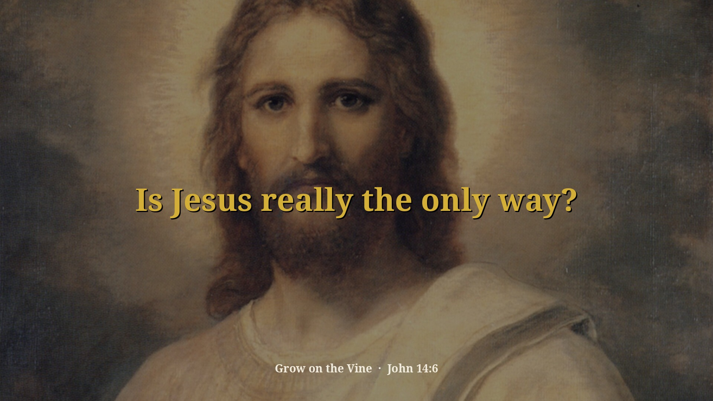
0:46Is Jesus really the only way?
From “Division Concluded Part 2”
Yes. Jesus is the only way. No one comes to the Father except through Him.
- 0:48
Can you pick and choose with God?
From “Division Concluded Part 2”
No. A soldier of Jesus Christ doesn’t pick and choose when to show up or what to obey.
- 0:42
Is God still shaping you?
From “Division Concluded Part 1”
Yes. God is forming Christ in you, so you can accept where you are while you keep pursuing the goal.
- 0:45
What makes a real father?
From “Division Concluded Part 1”
A real father gives life and then guides his child all the way to maturity. Anybody can have kids, but not anybody does that.
- 0:40
How should you answer an insult?
From “Division Concluded Part 1”
Give good words back. When you’re spoken evil of, answer with kindness and goodness.
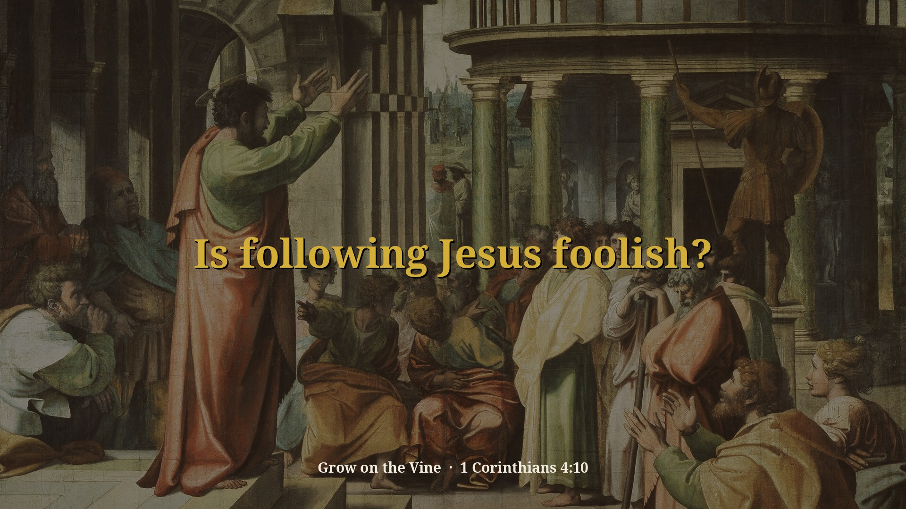
0:44Is following Jesus foolish?
From “Division Concluded Part 1”
To the world it looks foolish, but putting Christ first is the wisest choice you can make.
- 0:39
How do you spell love?
From “Division Part 2”
T-I-M-E. If you say you love God, you’ll spend time with Him.
- 0:39
Can God really change a person?
From “Division Part 2”
Yes. When Pastor Kincer surrendered at the altar, God’s Spirit made him a changed person.
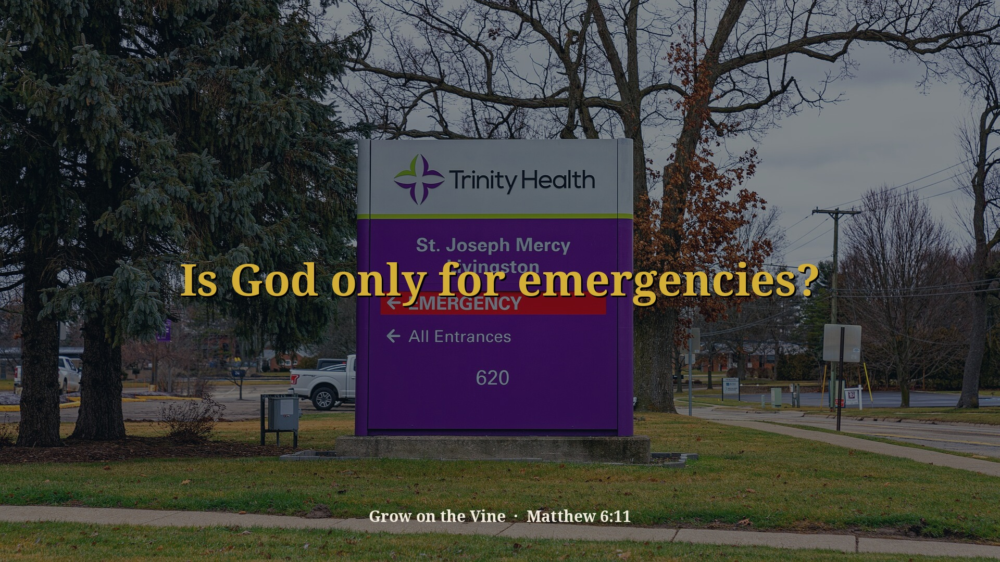
0:44Is God only for emergencies?
From “Division Part 2”
No. Pastor Kincer says God is not just for emergencies — we need Him every day of our life.
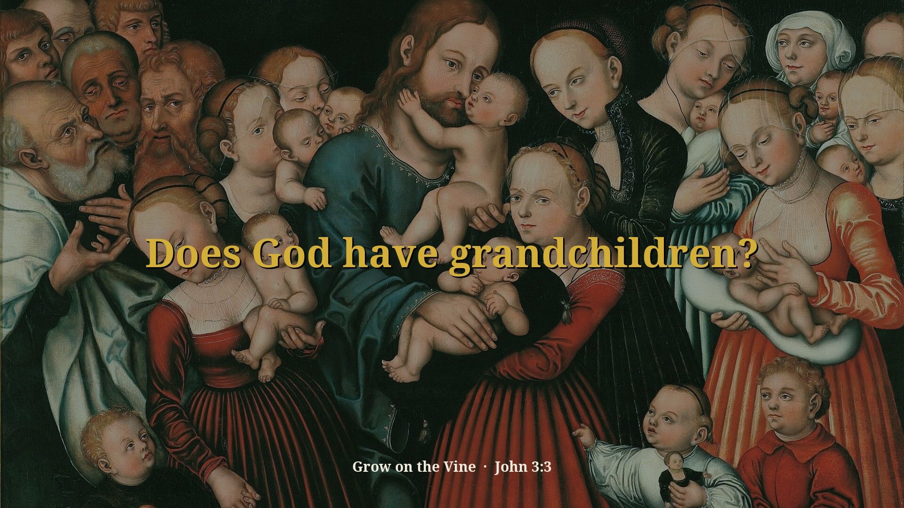
0:41Does God have grandchildren?
From “Division Part 2”
No. God has no grandchildren and no stepchildren — only children.
- 1:24
Can the Word still turn a nation?
From “Saving a Nation”
Yes. Pastor Kincer says that if the church gets the message out, the Word does the work — it convicts and convinces people.
- 1:21
Do we only want to hear smooth things?
From “Saving a Nation”
Many people do. They want to be told they’re okay, so they hire ministers to say what they want to hear instead of what is right.
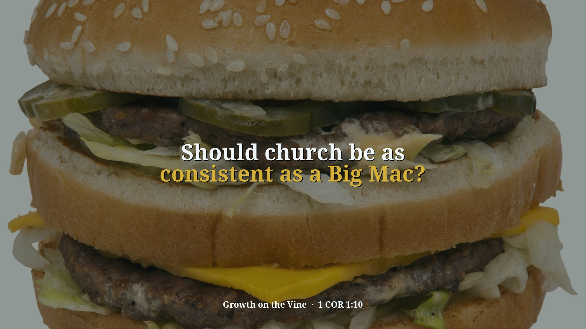
1:04Should church be as consistent as a Big Mac?
From “Division Part 1”
In what is preached, yes. Pastor Kincer says the Holy Ghost, salvation, righteousness and holy living should be preached the same in every church.
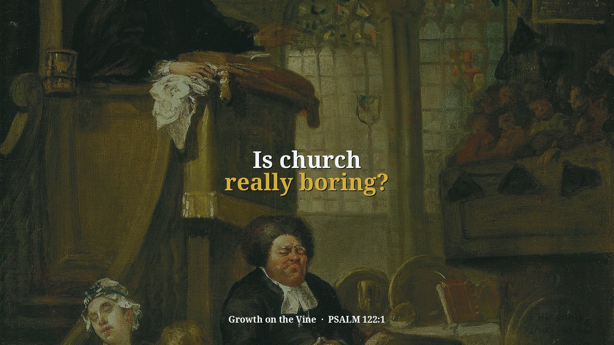
1:27Is church really boring?
From “Division Part 1”
It can feel that way. Pastor Kincer says church was boring to him as a teenager because he wasn’t involved and had lost his desire for Jesus.
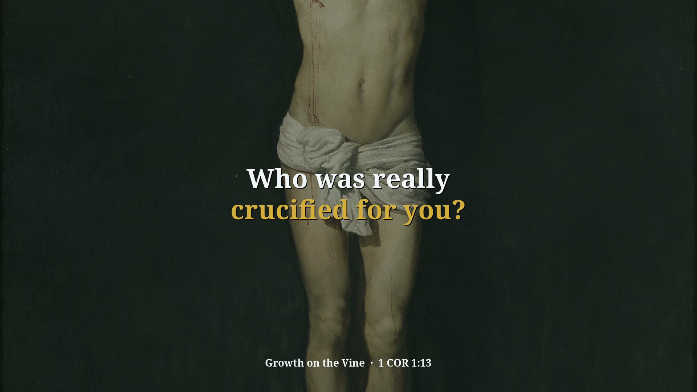
1:23Who was really crucified for you?
From “Division Part 1”
Christ was — not Paul, and not any church name, group or minister.
- 1:13
What if a nation turns back to God?
From “Saving a Nation”
God says He will relent from the judgment He planned. Pastor Kincer adds that Bible morality is an umbrella of protection when God judges.
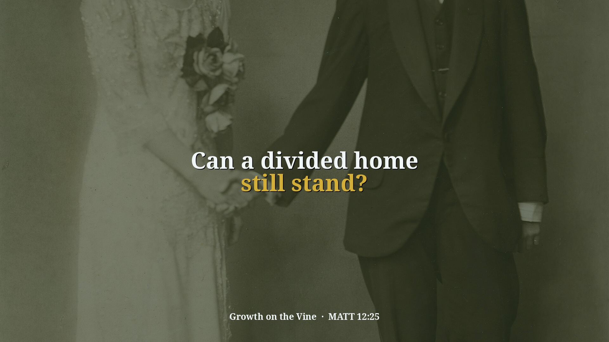
1:27Can a divided home still stand?
From “Division Part 1”
No. Jesus said a house divided against itself will not stand.
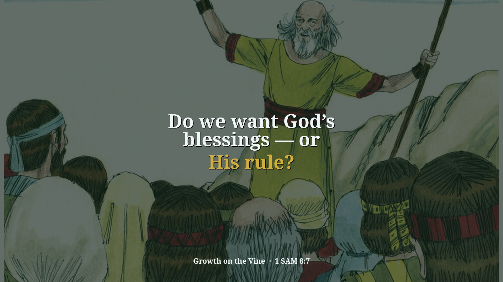
1:21Do we want God’s blessings — or His rule?
From “Saving a Nation”
God wants to rule our lives, not just bless them. Too many want heaven and His blessings without doing what He says.
- 1:16
Does “be perfect” mean never fail?
From “A More Excellent Way”
No. Pastor Kincer says “be perfect” means spiritual maturity and completeness, not a life with no flaws.
- 0:57
What if my gifts are just noise?
From “A More Excellent Way”
Without love, even speaking in the languages of men and angels is just noise — a clanging cymbal.
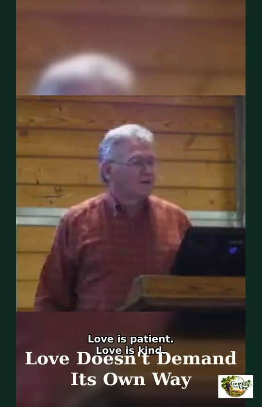
1:16Does real love insist on its own way?
From “A More Excellent Way”
No. Real love doesn’t demand its own way. It wants the right way — the truth.
- 1:12
Can I serve God and still miss knowing Him?
From “A More Excellent Way”
Yes. You can be used by God — even prophesy and do mighty works in Jesus’ name — and still miss the most important thing: love.
- 1:36
What is the real goal of God’s Word?
From “A More Excellent Way”
Love from a pure heart. Paul says that is the goal of the commandment.
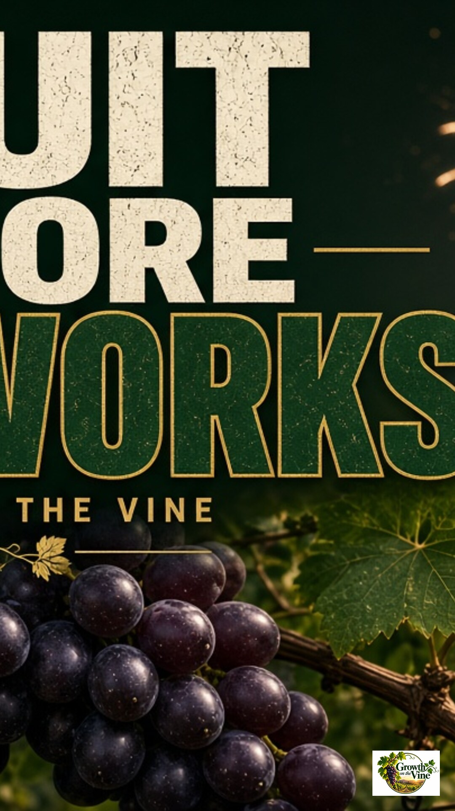
1:15Is God looking for fruit — or fireworks?
From “A More Excellent Way”
Fruit comes first. Love is the first fruit of the Spirit and the peak of God’s character, and you can’t have the manifestations of the Spirit without it.
No messages or clips match .
Try a shorter or different word, or have a question? Ask it here.